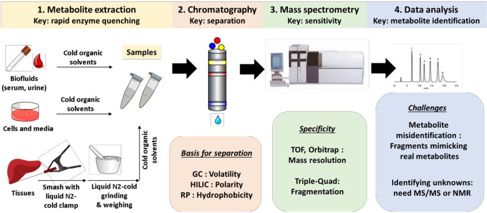
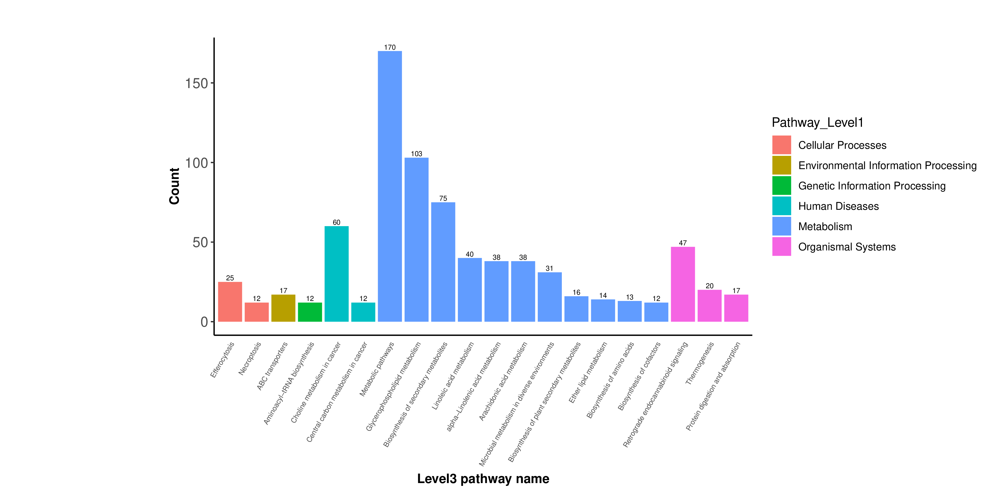
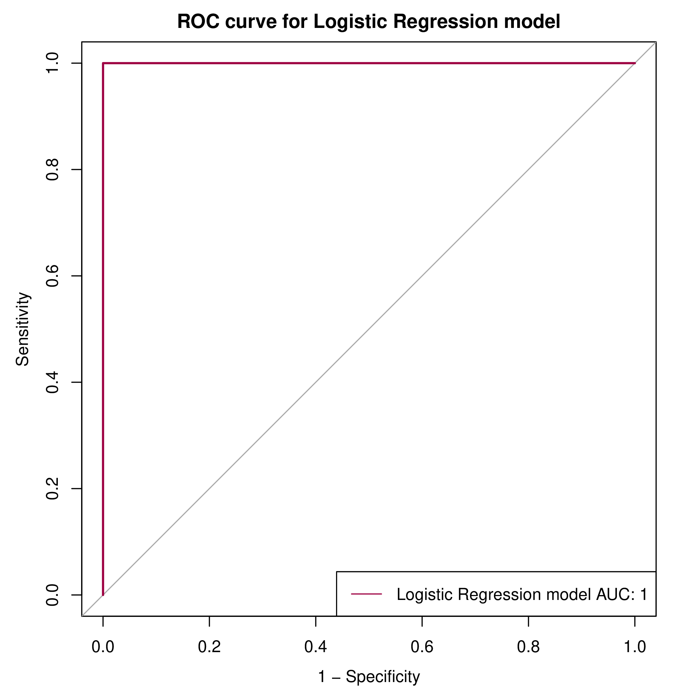

- 一、项目概览
- 二、项目信息
- 三、数据质控
- 四、代谢物鉴定
- 五、代谢物定量
- 六、差异分析
- 七、附录
- 八、参考文献
-
九、咨询与帮助
非靶向代谢组学结题报告
客户姓名 吕琨 客户单位 哈尔滨医科大学附属第一医院 项目编号 LC-P20240114029 销售姓名 孙泽鋆 销售邮箱 zjunsun@lc-bio.com 售后邮箱 support@lc-bio.com
您值得信赖的多组学整合专家
一、项目概览
代谢组学（Metabolomics）是系统生物学的重要组成部分，是继基因组学、转录组学、蛋白组学后出现的以定量描述生物体内代谢物变化为目标的新兴组学。代谢组处于基因调控网络和蛋白作用网络的下游，提供的是生物学的终端信息。代谢物与上游基因、蛋白进行相互作用以反馈上游的生命活动网络，以完成机体所赋予的各项功能活动。代谢组学从研究特点上可分为非靶向代谢组学和靶向代谢组学。非靶向代谢组学无偏向地检测样本中所有能检测到的代谢物分子，主要采用 LC-MS等技术，无偏向性的检测细胞、组织、器官或者生物体内受到刺激或扰动前后所有小分子代谢物（主要是相对分子量1000 Da以内的小分子化合物）的动态变化，并通过生信分析筛选差异代谢物，对差异代谢物进行通路分析，揭示其变化的生理机制。

图1-1：代谢组学整体流程图
二、项目信息
2.1 物种信息
物种名：小鼠
拉丁名：mus musculus
2.2 分组信息
本项目样本分组情况如下，COND为分组方案：（其中Sample列一般由客户填写的样本实际名称，可能会因实际名称中包含中文或特殊字符导致显示乱码。SampleID为样本分析名称。COND1为样本分组）
Sample SampleID COND1 A A1 A A A2 A A A3 A A A4 A A A5 A A A6 A B B1 B B B2 B B B3 B B B4 B B B5 B B B6 B E E1 E E E2 E E E3 E E E4 E E E5 E E E6 E
项目原始数据由于数据量较大，会在您完整结题后单独释放，summary中RawData文件夹为空。值得注意的是，为了更多地检测到样本中代谢物，非靶代谢组会上样样品进行正负离子两种模式扫描，每个样本会得到正负模式两个原始数据。
2.3 实验流程
首先用有机试剂沉淀代谢物法对样本进行代谢物提取，并同时制备多个质控（QC）样本（取等量本项目的客户样本混合而成）。对所提取的样本进行随机上机排序检测，在样品前、中、后分别插入QC样品作为实验技术重复评估。样品分别在正负离子模式下进行质谱扫描检测。
图2-1：实验流程图
2.4 分析流程
利用XCMS软件进行峰提取并进行质控，使用metaX软件进行代谢物鉴定，并对鉴定到的代谢物进行常见功能数据库注释，之后对代谢物进行定量分析、样本相关性分析和差异分析，针对差异代谢物进行KEGG功能富集分析、互作网络分析、代谢物相关性分析等一系列的差异代谢物功能分析，信息分析流程如下图：
图2-2：分析流程图
三、数据质控
QC-Pearson Correlation
各QC样品是取等量制备好的客户样本混合而成，作为实验技术重复穿插在整个实验始终。根据质控后的各QC样本丰度值进行皮尔森相关性（Pearson’s Correlation Coefficient）分析并绘图。样本间相关性越大，数值越大、颜色越红。通过观察各QC样本的皮尔森相关性分析图，我们可以了解其代谢物检测的重复性情况，QC样本间重复性越好，表明仪器在整个样本检测分析过程中状态越稳定。
图3-1：QC- Pearson Correlation
文件位置：
summary/02.QualityControl/Correlation/QC_cor_heatmap.png
原始丰度表
使用XCMS软件对在不同样品离子峰的进行峰提取、峰对齐，得到各代谢离子在样本的原始丰度信息，并补充了离子的一二级代谢物鉴定信息，见raw.intensity表格。值得注意的是，原始丰度信息一般不直接使用，需进行数据质控和清洗后才能用于下游分析。
各代谢离子原始丰度表：（报告中表格展示前十行信息）
Type ID MZ RT MS2.name MS2_score Formula SuperClass Class HMDB kegg kegg_pathway MS1.name A1 A2 A3 A4 A5 A6 B1 B2 B3 B4 B5 B6 E1 E2 E3 E4 E5 E6 QC1 QC2 QC3 QC4 QC5 QC6 QC7 NEG NEG_131.0705_2.1408 131.07 2.14 (+)-2-Hydroxyisocaproic acid 91.40 C6H12O3 Lipids and lipid-like molecules Fatty Acyls HMDB0000746 NA NA 2-Hydroxy-3-methylpentanoic acid;(5R)-5-Hydroxyhexanoic acid;5-Hydroxyhexanoic acid;D-Leucic acid;Leucinic acid;Hydroxyisocaproic acid;2-Hydroxycaproic acid;2-Ethyl-2-Hydroxybutyric acid;(R)-3-Hydroxyhexanoic acid;6-Hydroxyhexanoic acid;2-Methyl-3-hydroxyvaleric acid;(+/-)-1-Acetoxy-1-ethoxyethane;Paraldehyde;4,4-Dimethoxy-2-butanone;Ethyl (±)-3-hydroxybutyrate;Butoxyacetic acid;Threo-3-Hydroxy-2-methylbutyric acid;3-hydroxyhexanoic acid;Tacrine;4,4'-Methylenedianiline 26599893.83 27789049.66 63091052.39 27036684.79 24520566.29 25053494.34 29616710.46 74680275.50 32117536.96 28736120.31 29067754.20 28568245.30 82050804.05 78007576.42 36195624.55 38223249.01 32194930.09 69933705.05 78130511.42 74343595.98 32708228.12 29334549.36 29872350.06 30179845.97 29444161.60 NEG NEG_211.1699_6.8084 211.17 6.81 (+-)-(E)-3-Methyl-4-decen-1-yl acetate 88.40 NA NA NA NA NA NA 10-Undecenyl acetate;Methyl (E)-2-dodecenoate;Coniferan;(±)-(E)-3-Methyl-4-decen-1-yl acetate;Ethyl 10-undecenoate;Rhodinyl propionate;Citronellyl propionate;1-Ethylhexyl tiglate;2,6,10,10-Tetramethyl-1-oxaspiro[4.5]decan-6-ol;1,1-Diethoxy-2,6-nonadiene;4-(3-Hydroxybutyl)-3,3,5-trimethylcyclohexanone;Oxacyclotetradecan-2-one 35252693.26 37695498.12 36061784.77 37012081.68 34869769.56 34613405.90 54701346.71 57439729.47 55238528.83 55137944.32 55004957.08 52217580.44 24759354.68 25188708.01 24822668.73 25813799.16 24304638.98 21911376.53 41991293.43 39967929.30 41197706.61 38933445.46 39029521.60 38098593.08 39117230.01 POS POS_205.0974_4.3418 205.10 4.34 (+-)-Tryptophan 93.20 NA NA NA NA NA NA L-Tryptophan;D-Tryptophan;3-Hydroxymethylantipyrine;Ethotoin;(±)-Tryptophan;Nirvanol;4-Hydroxyantipyrine;S-nirvanol;(-)-Nopol;Limonene aldehyde;2,4-Undecadienal;Dihydrojasmone;2-Hexylidenecyclopentanone;2,6,6-Trimethyl-1-cyclohexen-1-acetaldehyde;2,5-Undecadienal;2-Heptylfuran;Norecasantalol;6-Chloro-N-(1-methylethyl)-1,3,5-triazine-2,4-diamine;Indoleacrylic acid 966883.28 1122891.79 1207618.23 1023970.65 870749.27 969138.81 1357498.73 817339.84 791592.45 839958.54 735003.14 1205554.12 1393219.33 958195.81 1212723.45 1365118.90 1275072.40 1376739.22 1019045.65 1042583.13 1733814.64 1789558.69 926743.93 1735539.42 910360.89 NEG NEG_167.1435_5.9449 167.14 5.94 (+/-)-trans- and cis-4,8-Dimethyl-3,7-nonadien-2-ol 81.30 C11H20O Lipids and lipid-like molecules Prenol lipids HMDB0032238 NA NA 10-Undecenal;(+/-)-trans- and cis-4,8-Dimethyl-3,7-nonadien-2-ol;10-Undecen-2-one;(1R,2R)-1,2,7,7-Tetramethylbicyclo[2.2.1]heptan-2-ol;9-Undecenal;2-Undecenal 4893522.12 5188679.98 5207106.12 1272562.16 4932338.50 4981590.19 4437487.95 4564142.02 4591693.01 4444794.68 4540672.63 4396046.19 4735919.91 4911452.07 4410716.37 4705178.52 4559686.21 1289301.43 1216188.16 4663394.13 1479322.66 1423154.30 1405828.91 4826298.08 1424513.28 POS POS_377.1455_4.364 377.15 4.36 (-)-Riboflavin 93.40 C17H20N4O6 Organoheterocyclic compounds Pteridines and derivatives HMDB0000244 C00255 map00740(Riboflavin metabolism);map01100(Metabolic pathways);map01110(Biosynthesis of secondary metabolites);map01240(Biosynthesis of cofactors);map02010(ABC transporters);map04977(Vitamin digestion and absorption) (1RS,2RS)-Guaiacylglycerol 1-glucoside;(1x,2x)-Guaiacylglycerol 2-glucoside;(1x,2x)-Guaiacylglycerol 3-glucoside;Riboflavin 1296024.95 1691467.92 1594639.14 1492747.95 1316044.37 1547361.54 1744239.05 2062750.61 1885052.76 2018457.43 1784768.03 1756471.71 1130149.33 1009321.66 1069265.69 1228810.45 992819.58 1012859.44 1487305.34 1596458.33 1539830.20 1436286.60 1471768.55 1478078.38 1453360.13 NEG NEG_221.1543_6.3919 221.15 6.39 (10betaH,11xi)-11-Hydroxy-13-nor-6-eremophilen-8-one 88.50 C14H22O2 Lipids and lipid-like molecules Prenol lipids HMDB0037605 NA NA Rishitin;Kobusone;Isokobusone;(10betaH,11xi)-11-Hydroxy-13-nor-6-eremophilen-8-one;Acetaldehyde butyl phenethyl acetal;2,6-Di-tert-butyl-1,4-benzenediol 11588539.01 12469375.34 11787792.19 12081953.07 11894831.99 11299181.71 17056856.38 17422113.69 17062953.60 18184873.08 17719413.54 16390169.96 11204637.69 10318199.64 11639425.05 11875825.91 10442803.23 8983335.74 13684450.14 13553263.08 14486369.24 13153085.14 13445898.68 12618270.82 13587461.41 NEG NEG_221.1543_6.5782 221.15 6.58 (10betaH,11xi)-11-Hydroxy-13-nor-6-eremophilen-8-one 90.40 C14H22O2 Lipids and lipid-like molecules Prenol lipids HMDB0037605 NA NA Rishitin;Kobusone;Isokobusone;(10betaH,11xi)-11-Hydroxy-13-nor-6-eremophilen-8-one;Acetaldehyde butyl phenethyl acetal;2,6-Di-tert-butyl-1,4-benzenediol 23022005.23 21486909.43 23801133.44 21653530.55 22700768.87 22231492.48 26944832.24 49638464.88 45698390.63 25513155.18 16893477.16 45208760.96 21810312.60 22812648.39 22370380.23 22484533.46 22831711.17 22434614.76 24741884.65 24175858.37 24796216.74 23737931.68 25788616.22 23894765.06 24536184.12 NEG NEG_221.154_5.6094 221.15 5.61 (10betaH,11xi)-11-Hydroxy-13-nor-6-eremophilen-8-one 84.60 C14H22O2 Lipids and lipid-like molecules Prenol lipids HMDB0037605 NA NA Rishitin;Kobusone;Isokobusone;(10betaH,11xi)-11-Hydroxy-13-nor-6-eremophilen-8-one;Acetaldehyde butyl phenethyl acetal;2,6-Di-tert-butyl-1,4-benzenediol;Phenformin 11591218.12 12236405.81 13834761.62 14494315.53 20342544.39 14207052.53 12513856.59 16387776.96 16347412.27 13466639.70 14310956.09 13808896.55 14302598.93 14818595.01 13459425.44 14464458.50 18718019.43 13154266.39 16021463.24 17673434.03 18213628.10 17818972.77 18278973.35 18338823.65 17608626.07 NEG NEG_471.3118_5.3108 471.31 5.31 (17alpha,23S)-Epoxy-28,29-dihydroxy-27-norlanost-8-ene-3,24-dione 82.20 C29H44O5 Lipids and lipid-like molecules Prenol lipids HMDB0035624 NA NA (3beta,17alpha,23R)-17,23-Epoxy-3,29-dihydroxy-27-norlanost-8-ene-15,24-dione;(17alpha,23S)-Epoxy-28,29-dihydroxy-27-norlanost-8-ene-3,24-dione;(23S,24S)-17,23-Epoxy-24,29-dihydroxy-27-norlanost-8-ene-3,15-dione 455304.80 381493.62 391709.92 461186.41 432963.51 391892.23 7824783.83 8215279.97 8019695.51 8354821.79 8087945.97 7379183.88 837912.78 934944.11 855654.40 963438.84 820440.44 844043.91 3215471.26 3106818.97 3031645.49 3119448.43 2981818.57 3025004.45 3101964.52
表头说明：
Term 意义 Type 质谱检测模式 ID 代谢离子ID（以质荷比和保留时间命名） MZ 质荷比 RT 保留时间 MS2.name 匹配到的二级代谢物名字 MS2_score 二级代谢物与数据库匹配得分 Formula 二级代谢物化学式 SuperClass 代谢物在HMDB的SuperClass信息 Class 代谢物在HMDB的Class信息 HMDB 代谢物在HMDB数据库中的编号 kegg 代谢物在KEGG数据库中的编号 kegg_pathway 代谢物在KEGG数据库中的通路信息 MS1.name 匹配到的一级代谢物名字 后续其它列 该代谢离子在不同样本中原始丰度值
文件位置：
summary/02.QualityControl/raw.intensity.xlsx
四、代谢物鉴定
对XCMS检测到的离子，我们首先利用开源软件metaX通过物质的一级m/z与HMDB、KEGG等数据库进行匹配，得到一级鉴定结果。由于数据库里存在很多同分异构体的代谢物，一级鉴定结果往往有很多一个m/z对应多个代谢物的情况，idms1参考鉴定有限。之后我们利用建立的in-house代谢物二级质谱图谱库，与样品的代谢物二级质谱数据进行匹配，得到可信度更高的代谢物鉴定结果，建议参考idms2鉴定结果。
需要注意的是由于目前代谢物数据库均不区分物种，在鉴定结果中可能匹配到样本中不含有的代谢物，后续数据挖掘时可再查询代谢物详细信息，常用的网站有HMDB（https://hmdb.ca/）、KEGG（https://www.kegg.jp/）、Pubchem（https://pubchem.ncbi.nlm.nih.gov/）等。
人类代谢组数据库(Human Metabolome Database，HMDB)是加拿大代谢组学创新中心（TMIC）创立的人体代谢组学综合数据库，是最常用的代谢组数据库之一,。HMDB数据库开源，可免费访问下载，目前已更新至4.0版本，收录内容包括物质的化学信息、临床数据分子生物学数据等超过11万种代谢物的信息。诸如：DrugBank（常用药物数据库，包含约2280种药物代谢物信息）、T3DB（专门的毒物数据库，包含约3670种常见毒素和环境污染物代谢物信息）、SMPDB（常用的小分子代谢通路数据库，包含3万多个人类代谢物和疾病通路信息，通路图片很精美）和FooDB（专门的食品研究数据库，包含约28000种食品成分和食品添加剂代谢物信息）HFMDB（专门的粪便代谢物数据库，包含有关人类粪便中发现的许多小分子代谢物和许多浓度值的详细信息）等数据库都属HMDB旗下。HMDB数据库不局限用于人，在其他动物乃至植物、微生物的代谢物检测中均有广泛应用。
KEGG数据库（Kyoto Encyclopedia of Genes and Genomes）全称是京都基因和基因组百科全书，是目前应用最为广泛的通路数据库，收录了所有物种大量的代谢物、反应、酶和基因信息，KEGG数据库包含旨在了解生物系统（如细胞，组织等）中基因、代谢及代谢物的功能及相互作用关系。KEGG数据库在探究代谢物的功能、与代谢物的调控机制上有广发应用。
4.1 一级代谢物的鉴定
在一级代谢物部分列出了代谢离子所匹配上的idms1代谢物作为参考。由于一级鉴定结果是使用一级质谱数据进行匹配，准确度较低，建议参考idms2匹配结果。
一级代谢物鉴定结果表：
Type ID MZ RT MS1.name NEG NEG_131.0705_2.1408 131.07 2.14 2-Hydroxy-3-methylpentanoic acid;(5R)-5-Hydroxyhexanoic acid;5-Hydroxyhexanoic acid;D-Leucic acid;Leucinic acid;Hydroxyisocaproic acid;2-Hydroxycaproic acid;2-Ethyl-2-Hydroxybutyric acid;(R)-3-Hydroxyhexanoic acid;6-Hydroxyhexanoic acid;2-Methyl-3-hydroxyvaleric acid;(+/-)-1-Acetoxy-1-ethoxyethane;Paraldehyde;4,4-Dimethoxy-2-butanone;Ethyl (±)-3-hydroxybutyrate;Butoxyacetic acid;Threo-3-Hydroxy-2-methylbutyric acid;3-hydroxyhexanoic acid;Tacrine;4,4'-Methylenedianiline NEG NEG_211.1699_6.8084 211.17 6.81 10-Undecenyl acetate;Methyl (E)-2-dodecenoate;Coniferan;(±)-(E)-3-Methyl-4-decen-1-yl acetate;Ethyl 10-undecenoate;Rhodinyl propionate;Citronellyl propionate;1-Ethylhexyl tiglate;2,6,10,10-Tetramethyl-1-oxaspiro[4.5]decan-6-ol;1,1-Diethoxy-2,6-nonadiene;4-(3-Hydroxybutyl)-3,3,5-trimethylcyclohexanone;Oxacyclotetradecan-2-one POS POS_205.0974_4.3418 205.10 4.34 L-Tryptophan;D-Tryptophan;3-Hydroxymethylantipyrine;Ethotoin;(±)-Tryptophan;Nirvanol;4-Hydroxyantipyrine;S-nirvanol;(-)-Nopol;Limonene aldehyde;2,4-Undecadienal;Dihydrojasmone;2-Hexylidenecyclopentanone;2,6,6-Trimethyl-1-cyclohexen-1-acetaldehyde;2,5-Undecadienal;2-Heptylfuran;Norecasantalol;6-Chloro-N-(1-methylethyl)-1,3,5-triazine-2,4-diamine;Indoleacrylic acid NEG NEG_167.1435_5.9449 167.14 5.94 10-Undecenal;(+/-)-trans- and cis-4,8-Dimethyl-3,7-nonadien-2-ol;10-Undecen-2-one;(1R,2R)-1,2,7,7-Tetramethylbicyclo[2.2.1]heptan-2-ol;9-Undecenal;2-Undecenal POS POS_377.1455_4.364 377.15 4.36 (1RS,2RS)-Guaiacylglycerol 1-glucoside;(1x,2x)-Guaiacylglycerol 2-glucoside;(1x,2x)-Guaiacylglycerol 3-glucoside;Riboflavin NEG NEG_221.1543_6.3919 221.15 6.39 Rishitin;Kobusone;Isokobusone;(10betaH,11xi)-11-Hydroxy-13-nor-6-eremophilen-8-one;Acetaldehyde butyl phenethyl acetal;2,6-Di-tert-butyl-1,4-benzenediol NEG NEG_221.1543_6.5782 221.15 6.58 Rishitin;Kobusone;Isokobusone;(10betaH,11xi)-11-Hydroxy-13-nor-6-eremophilen-8-one;Acetaldehyde butyl phenethyl acetal;2,6-Di-tert-butyl-1,4-benzenediol NEG NEG_221.154_5.6094 221.15 5.61 Rishitin;Kobusone;Isokobusone;(10betaH,11xi)-11-Hydroxy-13-nor-6-eremophilen-8-one;Acetaldehyde butyl phenethyl acetal;2,6-Di-tert-butyl-1,4-benzenediol;Phenformin NEG NEG_471.3118_5.3108 471.31 5.31 (3beta,17alpha,23R)-17,23-Epoxy-3,29-dihydroxy-27-norlanost-8-ene-15,24-dione;(17alpha,23S)-Epoxy-28,29-dihydroxy-27-norlanost-8-ene-3,24-dione;(23S,24S)-17,23-Epoxy-24,29-dihydroxy-27-norlanost-8-ene-3,15-dione
表头说明：
Term 意义 Type 质谱检测模式 ID 代谢离子ID（以质荷比和保留时间命名） MZ 质荷比 RT 保留时间 MS1.name 匹配到的一级代谢物名字
文件位置：
summary/03.Identification/idms1/idms1.xlsx
4.2 二级代谢物的鉴定
每个离子在质谱仪里面可以进行碎裂，这些碎片可以通过质谱检测生成二级图谱，与公司整理的inhouse数据库的二级图谱进行匹配，打分，最终得到代谢物二级鉴定结果。idms2代谢物鉴定结果可信度更高的，建议优先参考idms2匹配结果。
二级代谢物鉴定结果表：
Type ID MZ RT MS2.name MS2_score Formula HMDB SuperClass Class kegg kegg_pathway NEG NEG_203.0822_2.2257 203.08 2.23 L-Tryptophan 98.20 C11H12N2O2 HMDB0000929 Organoheterocyclic compounds Indoles and derivatives C00078 map00260(Glycine, serine and threonine metabolism);map00380(Tryptophan metabolism);map00400(Phenylalanine, tyrosine and tryptophan biosynthesis);map00404(Staurosporine biosynthesis);map00901(Indole alkaloid biosynthesis);map00966(Glucosinolate biosynthesis);map00970(Aminoacyl-tRNA biosynthesis);map00996(Biosynthesis of various alkaloids);map00997(Biosynthesis of various other secondary metabolites);map00999(Biosynthesis of various plant secondary metabolites);map01060(Biosynthesis of plant secondary metabolites);map01061(Biosynthesis of phenylpropanoids);map01063(Biosynthesis of alkaloids derived from shikimate pathway);map01070(Biosynthesis of plant hormones);map01100(Metabolic pathways);map01110(Biosynthesis of secondary metabolites);map01210(2-Oxocarboxylic acid metabolism);map01230(Biosynthesis of amino acids);map01240(Biosynthesis of cofactors);map04361(Axon regeneration);map04726(Serotonergic synapse);map04974(Protein digestion and absorption);map04978(Mineral absorption);map05143(African trypanosomiasis);map05230(Central carbon metabolism in cancer) POS POS_162.1124_0.9172 162.11 0.92 L-Carnitine 98 C7H15NO3 HMDB0000062 Organic nitrogen compounds Organonitrogen compounds C00318 map04714(Thermogenesis);map04976(Bile secretion);map05415(Diabetic cardiomyopathy) POS POS_184.0699_7.8452 184.07 7.85 Phosphocholine 97.80 C5H15NO4P HMDB0001565 Organic nitrogen compounds Organonitrogen compounds C00588 map00552(Teichoic acid biosynthesis);map00564(Glycerophospholipid metabolism);map01100(Metabolic pathways);map05231(Choline metabolism in cancer) NEG NEG_180.066_1.0289 180.07 1.03 L-Tyrosine 97 C9H11NO3 HMDB0000158 Organic acids and derivatives Carboxylic acids and derivatives C00082 map00130(Ubiquinone and other terpenoid-quinone biosynthesis);map00261(Monobactam biosynthesis);map00350(Tyrosine metabolism);map00360(Phenylalanine metabolism);map00400(Phenylalanine, tyrosine and tryptophan biosynthesis);map00401(Novobiocin biosynthesis);map00460(Cyanoamino acid metabolism);map00680(Methane metabolism);map00730(Thiamine metabolism);map00940(Phenylpropanoid biosynthesis);map00950(Isoquinoline alkaloid biosynthesis);map00965(Betalain biosynthesis);map00966(Glucosinolate biosynthesis);map00970(Aminoacyl-tRNA biosynthesis);map00997(Biosynthesis of various other secondary metabolites);map00998(Biosynthesis of various antibiotics);map00999(Biosynthesis of various plant secondary metabolites);map01055(Biosynthesis of vancomycin group antibiotics);map01059(Biosynthesis of enediyne antibiotics);map01060(Biosynthesis of plant secondary metabolites);map01063(Biosynthesis of alkaloids derived from shikimate pathway);map01100(Metabolic pathways);map01110(Biosynthesis of secondary metabolites);map01210(2-Oxocarboxylic acid metabolism);map01230(Biosynthesis of amino acids);map01240(Biosynthesis of cofactors);map04728(Dopaminergic synapse);map04916(Melanogenesis);map04917(Prolactin signaling pathway);map04974(Protein digestion and absorption);map05012(Parkinson disease);map05030(Cocaine addiction);map05031(Amphetamine addiction);map05034(Alcoholism);map05230(Central carbon metabolism in cancer) POS POS_288.2168_4.8492 288.22 4.85 Octanoylcarnitine 96.90 C15H29NO4 HMDB0000791 Lipids and lipid-like molecules Fatty Acyls C02838 NA NEG NEG_212.0015_4.0036 212.00 4.00 Indoxyl sulfate 96.70 C8H7NO4S HMDB0000682 Organic acids and derivatives Organic sulfuric acids and derivatives NA NA POS POS_182.0812_1.0224 182.08 1.02 Tyrosine 96.60 C9H11NO3 HMDB0000158 Organic acids and derivatives Carboxylic acids and derivatives C00082 map00130(Ubiquinone and other terpenoid-quinone biosynthesis);map00261(Monobactam biosynthesis);map00350(Tyrosine metabolism);map00360(Phenylalanine metabolism);map00400(Phenylalanine, tyrosine and tryptophan biosynthesis);map00401(Novobiocin biosynthesis);map00460(Cyanoamino acid metabolism);map00680(Methane metabolism);map00730(Thiamine metabolism);map00940(Phenylpropanoid biosynthesis);map00950(Isoquinoline alkaloid biosynthesis);map00965(Betalain biosynthesis);map00966(Glucosinolate biosynthesis);map00970(Aminoacyl-tRNA biosynthesis);map00997(Biosynthesis of various other secondary metabolites);map00998(Biosynthesis of various antibiotics);map00999(Biosynthesis of various plant secondary metabolites);map01055(Biosynthesis of vancomycin group antibiotics);map01059(Biosynthesis of enediyne antibiotics);map01060(Biosynthesis of plant secondary metabolites);map01063(Biosynthesis of alkaloids derived from shikimate pathway);map01100(Metabolic pathways);map01110(Biosynthesis of secondary metabolites);map01210(2-Oxocarboxylic acid metabolism);map01230(Biosynthesis of amino acids);map01240(Biosynthesis of cofactors);map04728(Dopaminergic synapse);map04916(Melanogenesis);map04917(Prolactin signaling pathway);map04974(Protein digestion and absorption);map05012(Parkinson disease);map05030(Cocaine addiction);map05031(Amphetamine addiction);map05034(Alcoholism);map05230(Central carbon metabolism in cancer) NEG NEG_267.0736_1.0283 267.07 1.03 Inosine 96.50 C10H12N4O5 HMDB0000195 Nucleosides, nucleotides, and analogues Purine nucleosides C00294 map00230(Purine metabolism);map01100(Metabolic pathways);map01232(Nucleotide metabolism);map02010(ABC transporters) NEG NEG_507.2729_5.8481 507.27 5.85 LysoPG 18:2; LysoPG 18:2 96.40 C24H45O9P NA Lipids and lipid-like molecules Glycerophospholipids C05980 map00564(Glycerophospholipid metabolism);map01100(Metabolic pathways)
表头说明：
Term 意义 Type 质谱检测模式 ID 代谢离子ID（以质荷比和保留时间命名） MZ 质荷比 RT 保留时间 MS2.name 匹配到的二级代谢物名字 MS2_score 二级代谢物与数据库匹配得分 Formula 二级代谢物化学式 HMDB 代谢物在HMDB数据库中的编号 SuperClass 代谢物在HMDB的SuperClass信息 Class 代谢物在HMDB的Class信息 kegg 代谢物在KEGG数据库中的编号 kegg_pathway 代谢物在KEGG数据库中的通路信息
文件位置：
summary/03.Identification/idms2/idms2.xlsx
对鉴定到的idms2代谢物增加在HMDB数据库、KEGG数据库中的分类注释信息，并进行绘图展示。
其中代谢物的HMDB注释分类结果如下图所示，横坐标代表代谢物数目，纵坐标代表注释到的HMDB 的SuperClass分类。
图4-1：HMDB SuperClass分类注释统计图
二级代谢物HMDB注释统计表：
SuperClass Metabolites_nums MS2.name Lipids and lipid-like molecules 349 Octanoylcarnitine, LysoPG 18:2; LysoPG 18:2, 12R-Hydroxy-5Z,8Z,10E,14Z-eicosatetraenoic acid, 3-Hydroxyoleylcarnitine, LysoPG 18:0; LysoPG 18:0, Hexanoyl-L-carnitine, LysoPE 20:3, Oleoyl-L-carnitine, LysoPE 18:1, LysoPS 20:4; LysoPS 20:4, Stearoyl-L-carnitine, LysoPE 18:2, LysoPE 20:1, LysoPG 18:1; LysoPG 18:1, LysoPE 18:3, 1-(1Z-Octadecenyl)-sn-glycero-3-phosphocholine, Lauroyl-L-carnitine, Dexpanthenol, Sebacic acid, LysoPC 16:0, LysoPS 22:6; LysoPS 22:6, LysoPE 16:0, 16-Hydroxyhexadecanoic acid, Cis-8,11,14,17-Eicosatetraenoic acid, Dodecanedioic acid, LysoPE 20:4, 1,2-Dipalmitoyl-sn-glycero-3-phospho-(1'-myo-inositol), O-Acetyl-L-carnitine, Linoleoylcarnitine, Tetracosahexaenoic acid, LysoPC 20:2, LysoPE 22:5, 1-Heptadecanoyl-sn-glycero-3-phosphocholine, 1-O-Octadecyl-sn-glyceryl-3-phosphorylcholine, LysoPC 18:1, LysoPC 17:0, LysoPC 18:2, Undecylenic acid, 1-palmitoyl-2-linoleoyl-sn-glycero-3-phospho-(1'-rac-glycerol), 2-Hydroxy-2-methylbutyric acid, Undecanedioic acid, Corticosterone, Deoxycholic acid, 1-Palmitoyl-2-linoleoyl-sn-glycero-3-phosphocholine, LysoPC 14:0, LysoPC 20:3, 4,8,12,15-Octadecatetraenoic acid, LysoPC 18:0, LysoPE 16:1, Arachidonic acid, L-Propionylcarnitine, (+)-2-Hydroxyisocaproic acid, Palmitamide, 13-HODE, Octadecadienoate, PE(18:2(9Z,12Z)/16:0), 1,11-Undecanedicarboxylic acid, 5,8,11-Eicosatrienoic acid , LysoPI 16:0; LysoPI 16:0, D-erythro-Sphingosine-1-phosphate, Hexadecanedioic acid, (S)-14-Methylhexadecanoic acid, Tetracosapentaenoic acid (24:5n-6), LysoPI 18:1; LysoPI 18:1, LysoPI 18:0; LysoPI 18:0, LysoPC 20:1, 12,13-EpOME, 5-Dodecenoic acid, LysoPI 18:2; LysoPI 18:2, LysoPC 18:3, LysoPE 20:5, Eicosapentaenoic acid, Traumatic acid, (10betaH,11xi)-11-Hydroxy-13-nor-6-eremophilen-8-one, 5-Hydroxy-6E,8Z,11Z,14Z-eicosatetraenoic acid, 1,5-lactone, Docosatrienoic acid, Docosahexaenoic acid, Tetracosatetraenoic acid (24:4n-6), Pelargonic acid, LysoPC 19:1, Cholic acid, LysoPI 20:3; LysoPI 20:3, 12-Oxo-5Z,8Z,10E,14Z-eicosatetraenoic acid, 1-Arachidoyl-2-hydroxy-sn-glycero-3-phosphocholine, PG 34:1; PG(16:0/18:1), LysoPC 16:1, 12-HETE, .alpha.-Ionone, Adrenic acid, 1-Stearoyl-2-linoleoyl-sn-glycero-3-phospho-(1'-rac-glycerol), Tetradecanedioic acid, (Z)-14-Methyl-6-pentadecenoic acid, Linolenelaidic acid, LysoPC 17:1, 17(R)-Hydroxydocosahexaenoic acid, Plasmenyl-PE 36:4; PE(P-16:0/20:4), 7-Ketodeoxycholic acid, Docosanamide, Dodecylbenzenesulfonic acid, Goshuyic acid, 10-Methyltridecanoic acid, Tsuzuic acid, PE 36:4; PE(16:0/20:4), Ursocholic acid, LysoPI 20:4; LysoPI 20:4, LysoPC 19:0, 2-Nonenoic acid, 13-OxoODE, Acylcarnitine 16:1, Azelaic acid, 1-Palmitoyl-3-oleoyl-sn-glycero-2-phosphoethanolamine, 4,8,12,15,19-Docosapentaenoic acid, Dodeca-2(E),4(E)-dienoic acid, Germacrenone, Tridecanoic acid, 7Z,10Z-Hexadecadienoic acid, Octadecanedioic acid, Stearic acid, Acylcarnitine 16:2, Acylcarnitine 16:0, Palmitoylcarnitine, 8Z,11Z-eicosadienoic acid, xi-8-Methyldecanoic acid, Docosapentaenoic acid, Heptanoic acid, 13-Methylmyristic acid, (R)-3-Hydroxy-hexadecanoic acid, Palmitic acid, (9Z,12Z,14E)-16-Hydroxy-9,12,14-octadecatrienoic acid, LysoPE 22:6, (R)-3-Hydroxy-tetradecanoic acid, LysoPE 18:0, Acylcarnitine 14:0, PE(16:0/20:4(8Z,11Z,14Z,17Z)), Acylcarnitine 18:3, 12S-HHT, Suberic acid, 1-Stearoyl-2-docosahexaenoyl-sn-glycero-3-phosphocholine, Myristic acid, 12,13-Dihydroxy-9Z-octadecenoic acid, alpha-Rotunol, 5,8,11-Eicosatriynoic acid, Acylcarnitine 13:1, 11-Oxohexadecanoic acid, Tuberculostearic acid, LysoPC 20:4, Acylcarnitine 14:1, 5alpha-Pregnan-20alpha-ol-3-one, Acylcarnitine 20:4, Ursodeoxycholic acid, 9-Pentadecenoic acid, PE(18:1(9Z)/18:2(9Z,12Z)), 20a-Dihydroprogesterone, LysoPC 22:4, 7,7-Dimethyl-(5Z,8Z)-eicosadienoic acid, Isopropyl tetradecanoate, Palmitelaidic acid, Tauro-b-muricholic acid, 2,3-Methylene suberic acid, Acylcarnitine 14:2, Liquoric acid, Oleic acid, LysoPI 22:6; LysoPI 22:6, 1-O-Hexadecyl-2-O-(4Z,7Z,10Z,13Z,16Z,19Z-docosahexaenoyl)-sn-glyceryl-3-phosphorylcholine, 5-Hexyltetrahydro-2-furanoctanoic acid, Acylcarnitine 10:0, 2-hydroxystearate, PG 36:4; PG(16:0/20:4), Acylcarnitine 12:1, cis,cis-Muconic acid, 13'-Carboxy-gamma-tocopherol, Plasmenyl-PE 38:4; PE(P-18:0/20:4), 1-Palmitoyl-2-hydroxy-sn-glycero-3-phosphoethanolamine, Acylcarnitine 16:3, Isobutyryl-L-carnitine, (2xi,20beta)-2,20-Dihydroxy-3-oxo-12-ursen-28-oic acid, cis-5-Decenedioic acid, Acylcarnitine 10:1, 8-HETrE, 3,4-Methylenesebacic acid, 1-Behenoyl-2-hydroxy-sn-glycero-3-phosphocholine, 3-Methylbutyl 2-furanbutanoate, Acylcarnitine 8:1, 1-Oleoyl-sn-glycero-3-phosphocholine, FAHFA 36:1; FAHFA(18:1/18:0), 2,4,7-Decatrienoic acid, PG 36:3; PG(18:1/18:2), Hydrocortisone, LysoPC 20:5, xi-10-Hydroxyoctadecanoic acid, Acylcarnitine 14:3, Acylcarnitine 5:0, LysoPC 22:5, 11-Dehydrocorticosterone, 11(12)-Epoxy-5Z,8Z,14Z,17Z- eicosatetraenoic acid, Taurodeoxycholic acid, Acylcarnitine 16:4, 5b-Dihydrotestosterone, 10-hydroxy-11S,12S-epoxy-5Z,8Z,14Z-eicosatrienoic acid, PC 34:2; PC(16:0/18:2), 15,16-DiHODE, Tetracosanoic acid, Oleamide, cis-5,8,11,14-Eicosatetraenoic acid, 3-Oxotetradecanoic acid, 4,5-Dihydrovomifoliol, 17(18)-Epoxy-5Z,8Z,11Z,14Z-eicosatetraenoic acid, 5,12-dihydroxy-6,8,10,14-eicosatetraenoic acid, 6beta-Hydroxy-3-oxo-12-oleanen-28-oic acid, Blennin D, (17alpha,23S)-Epoxy-28,29-dihydroxy-27-norlanost-8-ene-3,24-dione, Acylcarnitine 11:1, LysoPC 22:6, Geranyl acetoacetate, PE(20:4(8Z,11Z,14Z,17Z)/18:0), LysoPC 15:0, (3beta,5alpha,9alpha,22E,24R)-3,5,9-Trihydroxy-23-methylergosta-7,22-dien-6-one, xi-8-Hydroxyhexadecanedioic acid, 1-Stearoyl-2-linoleoyl-sn-glycero-3-phosphocholine, PE(16:0/22:6(4Z,7Z,10Z,13Z,16Z,19Z)), (S)-2-Methylbutanoic acid, Plasmenyl-PE 38:6; PE(P-16:0/22:6), PC(18:2(9Z,12Z)/18:2(9Z,12Z)), LysoPC 16:2, 5a-Androst-3-en-17-one , SM 34:1; SM(d18:1/16:0), (+/-)-trans- and cis-4,8-Dimethyl-3,7-nonadien-2-ol, 1,2-Dihexadecanoyl-sn-glycero-3-phosphocholine, 13-Oxo-9,11-tridecadienoic acid, Acoric acid, dehydro-beta-Ionone, Taurocholate, 1-(1Z-Octadecenyl)-2-(4Z,7Z,10Z,13Z,16Z,19Z-docosahexaenoyl)-sn-glycero-3-phosphoethanolamine, 7a-Hydroxy-5b-cholanic acid, SM 34:2; SM(d14:0/20:2), 1,2-dioleoyl-sn-glycero-3-phosphatidylcholine, PE(18:2(9Z,12Z)/18:0), SM 34:2; SM(d17:2/17:0), Plasmenyl-PC 20:0; PC(P-14:0/6:0), Plasmenyl-PC 38:4; PC(P-14:0/24:4), 17-Keto-4(Z),7(Z),10(Z),13(Z),15(E),19(Z)-docosahexaenoic acid, 5.alpha.-Pregnane-3.alpha.,21-diol-11,20-dione, Avenoleic acid, Ganoderic acid beta, Polyethylene, oxidized, 3-carboxy-4-methyl-5-pentyl-2-furanpropanoic acid, PC(18:1(9Z)/22:6(4Z,7Z,10Z,13Z,16Z,19Z)), SM 33:1; SM(d14:0/19:1), Acylcarnitine 13:0, Gibberellin A12 7-aldehyde, Geijerone, PC(18:2(9Z,12Z)/20:5(5Z,8Z,11Z,14Z,17Z)), PC(20:4(8Z,11Z,14Z,17Z)/20:4(8Z,11Z,14Z,17Z)), Geranic acid, 2,2,6,10,14-Pentamethylpentadecanoic acid, 6-Ketomyristic acid, all trans-Retinal, alpha-Teresantalic acid, SM 36:1; SM(d14:0/22:1), PG 38:4; PG(18:0/20:4), LysoPE 17:0, PC(20:4(5Z,8Z,11Z,14Z)/16:0), SM 41:2; SM(d14:1/27:1), PC 38:4; PC(18:0/20:4), PC(18:3(9Z,12Z,15Z)/20:4(5Z,8Z,11Z,14Z)), Plasmenyl-PC 16:0; PC(P-14:0/2:0), PC(16:0/22:6(4Z,7Z,10Z,13Z,16Z,19Z)), PE(P-16:0e/0:0), PG 36:4; PG(18:2/18:2), Prostaglandin H1, ent-16b,19-Kauranediol 19-acetate, 4-Isopropylbenzoic acid, SM 34:2; SM(d14:2/20:0), PC 38:6; PC(16:0/22:6), SM 34:1; SM(d14:1/20:0), Priverogenin B, PC(16:0/18:3(6Z,9Z,12Z)), 15-Hydroxy-11Z,13E-eicosadienoic acid, PC(18:0/20:4(5Z,8Z,11Z,14Z)), Plasmenyl-PE 39:4; PE(P-19:0/20:4), 9,10,13-Trihydroxystearic acid, Plasmenyl-PE 37:4; PE(P-17:0/20:4), 8alpha-8-Hydroxy-12-oxo-13-abieten-18-oic acid, 3-Methylpentanoic acid, PC 36:2; PC(18:0/18:2), 2,5-Diisopropylphenol, Traumatin, FAHFA 36:3; FAHFA(18:2/18:1), PC(18:0/20:5(5Z,8Z,11Z,14Z,17Z)), 1-(1-Methylethenyl)-4-(1-methylethyl)benzene, 11(12)-Epoxy-5Z,8Z,14Z-eicosatrienoic acid, FAHFA 32:1; FAHFA(18:0/14:1), SM 33:1; SM(d14:1/19:0), Androstenol, Plasmenyl-PC 36:4; PC(P-14:0/22:4), Plasmenyl-PC 36:3; PC(P-14:0/22:3), 3-Hydroxy-3-methylglutaric acid, 1-(2,6,6-Trimethyl-2-cyclohexen-1-yl)-1-penten-3-one, Plasmenyl-PC 34:1; PC(P-14:0/20:1), PC 40:6; PC(18:0/22:6), Plasmenyl-PC 34:0; PC(P-14:0/20:0), FAHFA 40:7; FAHFA(20:4/20:3), PC 36:4; PC(16:0/20:4), PC(16:0/18:1(9Z)), PE(22:6(4Z,7Z,10Z,13Z,16Z,19Z)/18:0), PC(20:4(5Z,8Z,11Z,14Z)/20:5(5Z,8Z,11Z,14Z,17Z)), PE(22:6(4Z,7Z,10Z,13Z,16Z,19Z)/18:1(11Z)), (9S,10E,12S,13S)-9,12,13-Trihydroxy-10-octadecenoic acid, Lauroyl diethanolamide, PG 38:5; PG(18:1/20:4), Methyl (2E,6Z)-dodecadienoate, Sugiol, PC(16:0/16:1(9Z)), 1-Stearoyl-2-arachidonoyl-sn-glycero-3-phospho-(1'-myo-inositol), PC(22:2(13Z,16Z)/14:1(9Z)), (6beta,7alpha,12beta,13beta)-7-Hydroxy-11,16-dioxo-8,14-apianadien-22,6-olide, PC(18:1(11Z)/18:2(9Z,12Z)), Apo-8'-lycopenal, (Z)-2-Methyl-2-butene-1,4-diol 4-O-beta-D-Glucopyranoside, PC 34:1; PC(16:0/18:1), Plasmenyl-PE 41:6; PE(P-19:0/22:6), PC(15:0/20:2(11Z,14Z)), ent-17-Acetoxy-16b-kauran-19-al, FAHFA 44:11; FAHFA(22:6/22:5), PC 37:2; PC(19:0/18:2), Cer(d18:0/14:0), L-Menthyl acetoacetate, PC(16:1(9Z)/16:1(9Z)), 17-alpha,20-alpha-Dihydroxypregn-4-en-3-one, Dihydrojasmonic acid, Prostaglandin G1, anhydroretinol, PC 18:1; PC(5:0/13:1), PI(16:1(9Z)/16:0), LysoPE 22:4, PC(22:2(13Z,16Z)/15:0), SM 42:2; SM(d14:0/28:2), PC 18:2; PC(2:0/16:2), PC(18:2(9Z,12Z)/15:0), Plasmenyl-PE 38:5; PE(P-16:0/22:5), PC(15:0/22:4(7Z,10Z,13Z,16Z)), PE(18:2(9Z,12Z)/22:6(4Z,7Z,10Z,13Z,16Z,19Z)), (2'E,4'Z,7'Z,8E)-Colnelenic acid, PC(15:0/22:6(4Z,7Z,10Z,13Z,16Z,19Z)), PC 34:3; PC(16:1/18:2), FAHFA 23:3; FAHFA(5:0/18:3), LysoPA 20:4; LysoPA 20:4, LysoPA 18:2; LysoPA 18:2, PI(18:0/20:4(8Z,11Z,14Z,17Z)) Organic acids and derivatives 77 L-Tyrosine, Indoxyl sulfate, Tyrosine, DL-Arginine, N-Acetyl-L-phenylalanine, L-Glutamine, D-(+)-Pantothenic acid, Betaine, L-(-)-Phenylalanine, Methionine, Hexanoylglycine, L-Histidine, Phenylalanine, Proline, Lysine, 3-Methyl-2-oxovaleric acid, D-Pipecolinic acid, Citric acid, Taurine, L-5-Oxoproline, Phe-Pro, O,O-Diethyl phosphate, Propionic acid, N-Isobutyrylglycine, 3-Hydroxydodecanoic acid, (R)-3-Hydroxybutyric acid, Hexyl acetate, 2-Methylbutyl 3-hydroxy-2-methylidenebutanoate, 3-Oxopentanoic acid, Acrylic acid, Phenol sulphate, (S)-9-Hydroxy-10-undecenoic acid, Tiglylglycine, Glutathione, oxidized, Alpha-Ketooctanoic acid, L-(+)-Arginine, Dihydro-3-(2-octenyl)-2,5-furandione, L-Norleucine, 3-Hydroxyoctanoic acid, 3-Oxodecanoic acid, Pyroglutamic acid, p-Cresol sulfate, Triethyl phosphate, Trichloroacetic acid, Palmitoyl ethanolamide, Butyl 3-hydroxy-2-methylidenebutanoate, (alpha-D-mannosyl)7-beta-D-mannosyl-diacetylchitobiosyl-L-asparagine, isoform A (protein), N-Lauroylglycine, 3-hydroxyundecanoic acid, Oxalic acid, L-Pyroglutamic acid, Phenaceturic acid, N-Undecanoylglycine, DL-2-Aminooctanoic acid, 3-[3-(Sulfooxy)phenyl]propanoic acid, N-Decanoylglycine, Valerylglycine, Creatine, 4-Pentenyl acetate, Creatinine, 3-Oxododecanoic acid, N-acetyltryptophan, Gly-Glu, (R)-3-Hydroxyoctanoic acid, Acetoacetic acid, Bradykinin (1-5), Isoleucine, N-Nonanoylglycine, Pivalic acid, N-Acetylaminooctanoic acid, N-Palmitoyl phenylalanine, (R)-3-Hydroxydecanoic acid, 1,2,3-Propanetricarboxylic acid, cis-3-Hexenyl pyruvate, 3-Hydroxysebacic acid, 3-Hydroxyhexadecanoylcarnitine, Glu-Leu Organoheterocyclic compounds 65 L-Tryptophan, Tryptophan, Indole-3-carboxyaldehyde, DL-Indole-3-lactic acid, (-)-Riboflavin, Hypoxanthine, 1H-Indole-3-propanoic acid, 4-Pyridoxic acid, Xanthine, Isonicotinic acid, 4-Hydroxyquinoline, Uric acid, Niacinamide, 1,3,5-Benzenetriol, 1H-Indole-4-carboxaldehyde, Indole, 2-Exo-hydroxy-1,8-cineole, Adenine, Isoquinoline, Isopropylpyrazine, Uracil, Serotonin, Fomepizole, Pyridine, Kessyl glycol, Indoleacetic acid, Cytosine, 1-Pyrrolidinecarboxaldehyde, N-methyl-4,6,7-trihydroxy-1,2,3,4-tetrahydroisoquinoline, Piperidine, Norambreinolide, 5-Hexyltetrahydro-2-oxo-3-furancarboxylic acid, 7-Hydroxy-2,5-dimethyl-4H-1-benzopyran-4-one, 4-Carboxypyrazole, Furanone A, 2-Piperidinone, Indole-3-acetamide, 5-Hydroxyindoleacetic acid, 3-Indoleacetic acid, 1,2-Benzisothiazol-3(2H)-one, xi-4,5-Dihydro-2,4(5)-dimethyl-1H-imidazole, Proflavine, Anileridine, 6-Hydroxy-1H-indole-3-acetamide, Epoxycampholenic aldehyde, 2,5-Dimethylpyrazine, 3-Indoleacrylic acid, 1-Methyl-6-phenyl-1H-imidazo[4,5-b]pyridin-2-amine, Indole-5,6-quinone, 3beta-Hydroxycinnamolide, 2-(2-Thienyl)furan, Dihydroactinidiolide, 2-Methylfuran, Deoxyvasicinone, 1-(3-(Trifluoromethyl)phenyl)piperazine, Pyrrolidine, Quinaldic acid, 3-Acetylindole, Etomidate, Indolelactic acid, 5-Hydroxy-2-furoic acid, 3,7,7,10-Tetramethyl-12-thiabicyclo[9.1.0]dodeca-3,7-diene, 2-Benzoxazolol, Bilirubin, 1-Hydroxy-10-methylacridone Benzenoids 42 Diphenylamine, 2,4-Di-tert-butylphenol, Protocatechuic acid, Indanone, Benzisothiazolone (BIT), 3,5-Di-tert-butyl-4-hydroxybenzoic acid, Mono-2-ethylhexyl phthalate, Propylparaben, p-Cresol, 2-Methylbenzaldehyde, Phenol, Ginkgolic acid I, o-Nitrobenzoic acid, 2-Ethoxy-1-methoxy-4-(1-propenyl)benzene, alpha-Ionene, N-Hydroxy-1-aminonaphthalene, 2-Phenylacetamide, Antazoline, 4-Aminosalicylic acid, Ethylbenzene, Monoisobutyl phthalate, 2-Aminonaphthalene, 4-Phenyl-2-butenal, Hippuric acid, Hexylresorcinol, 1,2-Dihydro-1,1,6-trimethylnaphthalene, 2-Methyl-4-phenyl-2-butanol, Anacardic acid, alpha-Methylstyrene, 1,4-Diaminonaphthalene, Indane, N-Undecylbenzenesulfonic acid, Benzyl chloride, 1,1'-[1,12-Dodecanediylbis(oxy)]bisbenzene, 1,3-Diisopropylbenzene, Heptyl 4-hydroxybenzoate, Phenylglyoxylic acid, Hexyl phenylacetate, 2-Hydroxy-5-methoxybenzaldehyde, Anigorufone, Ketamine, Isopropyl 3-(3,4-dihydroxyphenyl)-2-hydroxypropanoate Organic oxygen compounds 16 L-Kynurenine, D-Gluconic acid, 2-Hydroxyacorenone, 2-trans-6-cis-Dodecadienal, Dihydroxyacetone, Aminoacetone, Jasmolone, Glucosereductone, 4,4alpha,5,6-Tetrahydro-7-methyl-2(3H)-naphthalenone, Threonic acid, (Z)-3-Oxo-2-(2-pentenyl)-1-cyclopenteneacetic acid, 8-Acetoxy-4-acoren-3-one, Tsibulin 1, 2,5-Undecadienal, trans-1,2-Dihydrobenzene-1,2-diol, Trifluoromethyl-bismethyl ketone Phenylpropanoids and polyketides 13 trans-4-Coumaric acid, trans-Ferulic acid, Ibuprofen, Yuzu lactone, 6-Formylumbelliferone, 2-Coumaric acid, 3,4-Dihydrocoumarin, 7-Ethoxy-4-methyl-2H-1-benzopyran-2-one, 3 Hydroxycoumarin, Dihydronaringenin-O-sulphate, Myricanone, 4-hydroxy-2H-chromen-2-one, 8-hydroxy-6,7-dimethoxy-2H-chromen-2-one Organic nitrogen compounds 9 L-Carnitine, Phosphocholine, Choline, 2-methylpropan-2-amine, Beta-Aminopropionitrile, 3-Methylhistamine, Amantadine, Myristoyl ethanolamide, Memantine Nucleosides, nucleotides, and analogues 7 Inosine, Adenosine, Uridine, Guanosine, Allopurinol riboside, Thymidine, N-Octanoylsphingosine-1-phosphate Organooxygen compounds 5 (Z)-1-(1-Ethoxyethoxy)-3-hexene, (2E,6E)-2,6-Nonadienal, Rishitin, Eremopetasinorol, 4-Hydroxybenzoylcholine
表头说明：
Term 意义 SuperClass HMDB的SuperClass分类 Metabolites_nums 鉴定到代谢物数目 MS2.name 代谢物名称
文件位置：
summary/03.Identification/idms2/HMDB_anno/All_HMDB_anno_barplot.png
summary/03.Identification/idms2/HMDB_anno/All_HMDB_anno_barplot.xlsx
KEGG数据库会将通路进行level1、2、3分类，level3即通路本身。根据鉴定到代谢物的KEGG通路注释，整理各通路中包含的代谢物数目，以及通路的level1、2分类，并选择其中代谢物数目TOP20的level3通路展示。横坐标代表各level3通路名称，并根据通路的level分类来用颜色区分，纵坐标代表通路中代谢物数目。

图4-2 代谢物数目TOP20通路
二级代谢物KEGG注释统计表：
Pathway_Level1 Pathway_Level2 Pathway_ID level3_pathway_name Metabolites_nums MS2.name Metabolism Global and overview maps 1210 2-Oxocarboxylic acid metabolism 9 Lysine,Methionine,L-Tryptophan,Tryptophan,Phenylalanine,L-Tyrosine,Tyrosine,Citric acid,Isoleucine Environmental Information Processing Membrane transport 2010 ABC transporters 17 Phosphoric acid,Lysine,L-(+)-Arginine,L-Glutamine,Phenylalanine,Choline,L-Histidine,Proline,Adenosine,Taurine,(-)-Riboflavin,Inosine,Uridine,Guanosine,Isoleucine,Betaine,Allose Human Diseases Infectious disease: parasitic 5143 African trypanosomiasis 3 L-Tryptophan,Tryptophan,L-Kynurenine Metabolism Amino acid metabolism 250 Alanine, aspartate and glutamate metabolism 2 L-Glutamine,Citric acid Human Diseases Substance dependence 5034 Alcoholism 3 L-Tyrosine,Tyrosine,Adenosine Organismal Systems Endocrine system 4925 Aldosterone synthesis and secretion 3 cis-5,8,11,14-Eicosatetraenoic acid,Arachidonic acid,Corticosterone Organismal Systems Excretory system 4960 Aldosterone-regulated sodium reabsorption 1 Hydrocortisone Metabolism Lipid metabolism 592 alpha-Linolenic acid metabolism 38 PC(16:0/22:6(4Z,7Z,10Z,13Z,16Z,19Z)),PC(18:2(9Z,12Z)/18:2(9Z,12Z)),PC(15:0/22:4(7Z,10Z,13Z,16Z)),PC(20:4(5Z,8Z,11Z,14Z)/16:0),PC(18:1(9Z)/22:6(4Z,7Z,10Z,13Z,16Z,19Z)),PC(15:0/20:2(11Z,14Z)),PC(20:4(8Z,11Z,14Z,17Z)/20:4(8Z,11Z,14Z,17Z)),PC 34:2; PC(16:0/18:2),PC(18:2(9Z,12Z)/20:5(5Z,8Z,11Z,14Z,17Z)),PC(16:1(9Z)/16:1(9Z)),PC 36:4; PC(16:0/20:4),PC(16:0/16:1(9Z)),PC 18:1; PC(5:0/13:1),PC(18:0/20:4(5Z,8Z,11Z,14Z)),PC 18:2; PC(2:0/16:2),PC(18:1(11Z)/18:2(9Z,12Z)),PC(22:2(13Z,16Z)/15:0),PC 40:6; PC(18:0/22:6),PC(20:4(5Z,8Z,11Z,14Z)/20:5(5Z,8Z,11Z,14Z,17Z)),PC 38:4; PC(18:0/20:4),PC 34:3; PC(16:1/18:2),1-Stearoyl-2-docosahexaenoyl-sn-glycero-3-phosphocholine,PC 38:6; PC(16:0/22:6),1-Stearoyl-2-linoleoyl-sn-glycero-3-phosphocholine,PC(16:0/18:1(9Z)),PC(16:0/18:3(6Z,9Z,12Z)),PC(15:0/22:6(4Z,7Z,10Z,13Z,16Z,19Z)),PC(22:2(13Z,16Z)/14:1(9Z)),PC 34:1; PC(16:0/18:1),1-Palmitoyl-2-linoleoyl-sn-glycero-3-phosphocholine,PC(18:2(9Z,12Z)/15:0),PC(18:3(9Z,12Z,15Z)/20:4(5Z,8Z,11Z,14Z)),PC(18:0/20:5(5Z,8Z,11Z,14Z,17Z)),PC 37:2; PC(19:0/18:2),PC 36:2; PC(18:0/18:2),Traumatic acid,Traumatin,(2'E,4'Z,7'Z,8E)-Colnelenic acid Genetic Information Processing Translation 970 Aminoacyl-tRNA biosynthesis 12 Lysine,L-(+)-Arginine,L-Glutamine,Methionine,L-Tryptophan,Tryptophan,Phenylalanine,L-Tyrosine,Tyrosine,L-Histidine,Proline,Isoleucine 表头说明：
Term 意义 Pathway_Level1 Pathway的Level1分类 Pathway_Level2 Pathway的Level2分类 Pathway_ID Pathway在KEGG数据库中编号 level3_pathway_name Pathway的名称 Metabolites_nums Pathway上鉴定到代谢物数目 MS2.name 代谢物名称
文件位置：
summary/03.Identification/idms2/KEGG_anno/Top20_KEGG_pathway_barplot.png
summary/03.Identification/idms2/KEGG_anno/All_KEGG_anno_stat.xlsx
根据一二级代谢物鉴定情况，进行数目统计。
代谢物鉴定统计表：
all_features idms1 idms2 24450 11625 661 表头说明：
Term 意义 all_features 代谢离子数目 MS1 有MS1注释的代谢离子数目 MS2 注释到的MS2代谢物数目
文件位置：
summary/03.Identification/identification.stat.xlsx
五、代谢物定量
使用XCMS软件对在不同样品离子峰的进行峰提取、峰对齐，得到各代谢离子在样本的原始丰度信息，使用metaX软件进行数据质控和处理：首先去除低质量峰（QC样本中缺失超过50%，或者实际样本中缺失超过80%），再采用median Normalization进行数据归一化,随后使用Minimum imputation方法进行缺失值填充。
5.1 数据总表
经数据的质控和归一化后，整理成数据总表，包含检测到所有代谢离子的代谢物的鉴定和数据处理后的定量信息。
数据总表：
Type ID MZ RT MS2.name MS2_score Formula SuperClass Class HMDB kegg kegg_pathway MS1.name A1 A2 A3 A4 A5 A6 B1 B2 B3 B4 B5 B6 E1 E2 E3 E4 E5 E6 QC1 QC2 QC3 QC4 QC5 QC6 QC7 NEG NEG_211.1699_6.8084 211.17 6.81 (+-)-(E)-3-Methyl-4-decen-1-yl acetate 88.40 NA NA NA NA NA NA 10-Undecenyl acetate;Methyl (E)-2-dodecenoate;Coniferan;(±)-(E)-3-Methyl-4-decen-1-yl acetate;Ethyl 10-undecenoate;Rhodinyl propionate;Citronellyl propionate;1-Ethylhexyl tiglate;2,6,10,10-Tetramethyl-1-oxaspiro[4.5]decan-6-ol;1,1-Diethoxy-2,6-nonadiene;4-(3-Hydroxybutyl)-3,3,5-trimethylcyclohexanone;Oxacyclotetradecan-2-one 36654542.53 37631791.43 36784053.45 37336922.82 35868361.08 35425301.48 51389044.99 52033042.08 50886115.31 50718906.94 51920151.18 50504410.33 26740388.08 26816364.38 26768345.01 27665023.78 26513513.36 24989286.06 41095438.69 38701161.64 39818914.06 38176657.43 38097508.62 37658984.16 38462218.20 POS POS_205.0974_4.3418 205.10 4.34 (+-)-Tryptophan 93.20 NA NA NA NA NA NA L-Tryptophan;D-Tryptophan;3-Hydroxymethylantipyrine;Ethotoin;(±)-Tryptophan;Nirvanol;4-Hydroxyantipyrine;S-nirvanol;(-)-Nopol;Limonene aldehyde;2,4-Undecadienal;Dihydrojasmone;2-Hexylidenecyclopentanone;2,6,6-Trimethyl-1-cyclohexen-1-acetaldehyde;2,5-Undecadienal;2-Heptylfuran;Norecasantalol;6-Chloro-N-(1-methylethyl)-1,3,5-triazine-2,4-diamine;Indoleacrylic acid 1005332.10 1120994.06 1231805.19 1032957.66 895685.57 991871.03 1275298.83 740405.27 729220.45 772639.95 693782.46 1166001.94 1504692.92 1020112.98 1307780.41 1463017.77 1390954.59 1570130.94 997305.02 1009538.87 1675787.85 1754773.26 904613.57 1715513.52 895117.04 POS POS_377.1455_4.364 377.15 4.36 (-)-Riboflavin 93.40 C17H20N4O6 Organoheterocyclic compounds Pteridines and derivatives HMDB0000244 C00255 map00740(Riboflavin metabolism);map01100(Metabolic pathways);map01110(Biosynthesis of secondary metabolites);map01240(Biosynthesis of cofactors);map02010(ABC transporters);map04977(Vitamin digestion and absorption) (1RS,2RS)-Guaiacylglycerol 1-glucoside;(1x,2x)-Guaiacylglycerol 2-glucoside;(1x,2x)-Guaiacylglycerol 3-glucoside;Riboflavin 1347562.34 1688609.28 1626577.60 1505849.24 1353732.91 1583656.61 1638621.07 1868588.01 1736523.66 1856687.91 1684674.09 1698844.86 1220574.29 1074542.50 1153077.99 1316934.02 1083049.83 1155136.66 1455574.72 1545859.22 1488295.63 1408368.07 1436623.17 1461023.25 1429023.84 NEG NEG_221.1543_6.3919 221.15 6.39 (10betaH,11xi)-11-Hydroxy-13-nor-6-eremophilen-8-one 88.50 C14H22O2 Lipids and lipid-like molecules Prenol lipids HMDB0037605 NA NA Rishitin;Kobusone;Isokobusone;(10betaH,11xi)-11-Hydroxy-13-nor-6-eremophilen-8-one;Acetaldehyde butyl phenethyl acetal;2,6-Di-tert-butyl-1,4-benzenediol 12049365.78 12448301.66 12023885.69 12187991.84 12235473.14 11564216.47 16024021.58 15782204.81 15718511.03 16727444.18 16725667.63 15852436.32 12101137.70 10984946.16 12551758.59 12727495.25 11391874.74 10245232.48 13392502.01 13123697.78 14001543.76 12897415.57 13124814.75 12472672.15 13359941.53 NEG NEG_221.1543_6.5782 221.15 6.58 (10betaH,11xi)-11-Hydroxy-13-nor-6-eremophilen-8-one 90.40 C14H22O2 Lipids and lipid-like molecules Prenol lipids HMDB0037605 NA NA Rishitin;Kobusone;Isokobusone;(10betaH,11xi)-11-Hydroxy-13-nor-6-eremophilen-8-one;Acetaldehyde butyl phenethyl acetal;2,6-Di-tert-butyl-1,4-benzenediol 23937492.20 21450595.81 24277837.89 21843575.46 23350867.66 22752956.63 25313256.07 44966094.99 42097673.93 23468400.20 15946051.68 43725538.31 23555388.69 24286767.37 24123838.68 24097001.34 24906721.71 25586024.01 24214033.92 23409614.14 23966344.36 23276513.93 25172791.99 23619050.10 24125329.61 NEG NEG_221.154_5.6094 221.15 5.61 (10betaH,11xi)-11-Hydroxy-13-nor-6-eremophilen-8-one 84.60 C14H22O2 Lipids and lipid-like molecules Prenol lipids HMDB0037605 NA NA Rishitin;Kobusone;Isokobusone;(10betaH,11xi)-11-Hydroxy-13-nor-6-eremophilen-8-one;Acetaldehyde butyl phenethyl acetal;2,6-Di-tert-butyl-1,4-benzenediol;Phenformin 12052151.43 12215725.86 14111853.15 14621526.69 20925108.96 14540294.60 11756111.65 14845228.13 15059349.40 12387354.19 13508364.39 13355850.11 15446971.49 15776150.30 14514416.14 15501770.42 20419166.02 15002057.28 15679656.58 17113281.55 17604059.83 17472607.71 17842477.08 18127217.13 17313772.42 NEG NEG_471.3118_5.3108 471.31 5.31 (17alpha,23S)-Epoxy-28,29-dihydroxy-27-norlanost-8-ene-3,24-dione 82.20 C29H44O5 Lipids and lipid-like molecules Prenol lipids HMDB0035624 NA NA (3beta,17alpha,23R)-17,23-Epoxy-3,29-dihydroxy-27-norlanost-8-ene-15,24-dione;(17alpha,23S)-Epoxy-28,29-dihydroxy-27-norlanost-8-ene-3,24-dione;(23S,24S)-17,23-Epoxy-24,29-dihydroxy-27-norlanost-8-ene-3,15-dione 473410.33 380848.88 399555.34 465234.07 445362.61 401084.49 7350973.83 7441992.02 7387799.04 7685223.57 7634355.15 7137085.39 904955.45 995358.79 922723.19 1032531.41 895004.39 962607.46 3146871.43 3008349.58 2930183.28 3058812.61 2910613.66 2990099.77 3050022.62 POS POS_293.2109_4.9975 293.21 5.00 (2'E,4'Z,7'Z,8E)-Colnelenic acid 71.10 C18H28O3 Lipids and lipid-like molecules Fatty Acyls HMDB0030996 C16320 map00592(alpha-Linolenic acid metabolism);map01110(Biosynthesis of secondary metabolites) (2'E,4'Z,7'Z,8E)-Colnelenic acid;Panaquinquecol 1;[7]-Paradol;3-Oxohexadecanoic acid;8-Oxohexadecanoic acid;9-Oxohexadecanoic acid;11-Oxohexadecanoic acid 615786.29 568514.48 529231.34 492895.79 530162.46 440863.10 1685352.37 1968594.35 1909603.34 1805392.22 1803941.55 1698640.40 693178.69 572547.48 451010.89 484031.41 592216.70 752331.83 881221.39 918669.76 885170.31 1104748.98 840540.69 913214.54 892561.06 POS POS_139.1118_5.1109 139.11 5.11 (2E,6E)-2,6-Nonadienal 75.40 C9H14O Organooxygen compounds Carbonyl compounds HMDB0031261 NA NA 2-Pentylfuran;(3Z,6Z)-3,6-Nonadienal;3,5,5-Trimethyl-2-cyclohexen-1-one;(2E,6E)-2,6-Nonadienal;2,4-Nonadienal;4-Acetyl-1-methylcyclohexene;Violet-leaf aldehyde;5-Isopropylbicyclo[3.1.0]hexan-2-one;(R)-Cryptone;Pulegenone;exo-5,6-Dimethylbicyclo[2.2.1]hept-5-en-2-ol;exo-2-Methyl-3-methylenebicyclo[2.2.1]heptan-2-ol;3,5,5-Trimethyl-3-cyclohexen-1-one 2170742.80 2120513.89 2165945.73 2104691.37 1656736.22 2127495.97 1368661.99 1701141.55 1299977.35 1458782.77 1515664.36 1801620.58 1129518.04 1133585.13 1275290.12 1138928.63 1126856.01 923030.00 1702377.39 1716171.19 1372936.49 1456660.91 1781486.54 1328430.13 1734492.69
表头说明：
Term 意义 Type 质谱检测模式 ID 代谢离子ID（以质荷比和保留时间命名） MZ 质荷比 RT 保留时间 MS2.name 匹配到的二级代谢物名字 MS2_score 二级代谢物与数据库匹配得分 Formula 二级代谢物化学式 SuperClass 代谢物在HMDB的SuperClass信息 Class 代谢物在HMDB的Class信息 HMDB 代谢物在HMDB数据库中的编号 kegg 代谢物在KEGG数据库中的编号 kegg_pathway 代谢物在KEGG数据库中的通路信息 MS1.name 匹配到的一级代谢物名字 后续其它列 该代谢离子在不同样本中丰度值
文件位置：
summary/04.Quantification/norm_intensity.xlsx
5.2 二级代谢物数据总表
根据数据总表，筛选出有MS2注释的代谢物及在相关信息，方便您查看数据，后续如需单独分析和绘图，可重点关注此总表。
二级代谢物数据总表：
Type ID MZ RT MS2.name MS2_score Formula SuperClass Class HMDB kegg kegg_pathway MS1.name A1 A2 A3 A4 A5 A6 B1 B2 B3 B4 B5 B6 E1 E2 E3 E4 E5 E6 QC1 QC2 QC3 QC4 QC5 QC6 QC7 NEG NEG_203.0822_2.2257 203.08 2.23 L-Tryptophan 98.20 C11H12N2O2 Organoheterocyclic compounds Indoles and derivatives HMDB0000929 C00078 map00260(Glycine, serine and threonine metabolism);map00380(Tryptophan metabolism);map00400(Phenylalanine, tyrosine and tryptophan biosynthesis);map00404(Staurosporine biosynthesis);map00901(Indole alkaloid biosynthesis);map00966(Glucosinolate biosynthesis);map00970(Aminoacyl-tRNA biosynthesis);map00996(Biosynthesis of various alkaloids);map00997(Biosynthesis of various other secondary metabolites);map00999(Biosynthesis of various plant secondary metabolites);map01060(Biosynthesis of plant secondary metabolites);map01061(Biosynthesis of phenylpropanoids);map01063(Biosynthesis of alkaloids derived from shikimate pathway);map01070(Biosynthesis of plant hormones);map01100(Metabolic pathways);map01110(Biosynthesis of secondary metabolites);map01210(2-Oxocarboxylic acid metabolism);map01230(Biosynthesis of amino acids);map01240(Biosynthesis of cofactors);map04361(Axon regeneration);map04726(Serotonergic synapse);map04974(Protein digestion and absorption);map04978(Mineral absorption);map05143(African trypanosomiasis);map05230(Central carbon metabolism in cancer) L-Tryptophan;D-Tryptophan;3-Hydroxymethylantipyrine;Ethotoin;(±)-Tryptophan;Nirvanol;4-Hydroxyantipyrine;S-nirvanol;6-Chloro-N-(1-methylethyl)-1,3,5-triazine-2,4-diamine;Indoleacrylic acid 254826948.86 255316667.67 256073534.52 260504590.56 250707104.15 123887469.06 208571050.97 109399250.77 219022705.47 109948466.59 213817543.06 208640932.99 332386808.43 330301547.64 332431265.88 356307745.26 324055788.41 319665853.01 261009054.37 262628087.65 258389039.34 263694713.73 254702706.11 258054003.26 253083957.47 POS POS_162.1124_0.9172 162.11 0.92 L-Carnitine 98 C7H15NO3 Organic nitrogen compounds Organonitrogen compounds HMDB0000062 C00318 map04714(Thermogenesis);map04976(Bile secretion);map05415(Diabetic cardiomyopathy) L-Carnitine;Malonyl-Carnitin;4-Hydroxycyclohexylcarboxylic acid;Tetrahydrofurfuryl acetate;Botryodiplodin;Methyl (R)-3-methyl-2-oxopentanoate;Ethyl levulinate 27162191.88 26752116.17 27168651.91 27431174.76 27896769.59 28217614.00 24851750.21 26322551.96 26329152.73 27600872.89 27597461.12 27426376.61 25712571.25 26760332.98 26620954.37 50039664.26 50939491.54 28183904.88 26941530.75 26798312.29 27697447.59 51682234.19 26944172.66 28836925.30 29192133.96 POS POS_184.0699_7.8452 184.07 7.85 Phosphocholine 97.80 C5H15NO4P Organic nitrogen compounds Organonitrogen compounds HMDB0001565 C00588 map00552(Teichoic acid biosynthesis);map00564(Glycerophospholipid metabolism);map01100(Metabolic pathways);map05231(Choline metabolism in cancer) NA 100560169.52 208331528.93 125246019.83 5707776.33 199934166.83 111968589.53 189725703.89 113011673.89 114642709.77 135584359.76 268751669.35 132273322.55 137993204.30 207152533.27 128724596.34 117670793.79 113314623.28 250837990.17 102801405.70 118375433.68 110581622.08 112736119.74 111936758.64 129300539.74 115082954.61 NEG NEG_180.066_1.0289 180.07 1.03 L-Tyrosine 97 C9H11NO3 Organic acids and derivatives Carboxylic acids and derivatives HMDB0000158 C00082 map00130(Ubiquinone and other terpenoid-quinone biosynthesis);map00261(Monobactam biosynthesis);map00350(Tyrosine metabolism);map00360(Phenylalanine metabolism);map00400(Phenylalanine, tyrosine and tryptophan biosynthesis);map00401(Novobiocin biosynthesis);map00460(Cyanoamino acid metabolism);map00680(Methane metabolism);map00730(Thiamine metabolism);map00940(Phenylpropanoid biosynthesis);map00950(Isoquinoline alkaloid biosynthesis);map00965(Betalain biosynthesis);map00966(Glucosinolate biosynthesis);map00970(Aminoacyl-tRNA biosynthesis);map00997(Biosynthesis of various other secondary metabolites);map00998(Biosynthesis of various antibiotics);map00999(Biosynthesis of various plant secondary metabolites);map01055(Biosynthesis of vancomycin group antibiotics);map01059(Biosynthesis of enediyne antibiotics);map01060(Biosynthesis of plant secondary metabolites);map01063(Biosynthesis of alkaloids derived from shikimate pathway);map01100(Metabolic pathways);map01110(Biosynthesis of secondary metabolites);map01210(2-Oxocarboxylic acid metabolism);map01230(Biosynthesis of amino acids);map01240(Biosynthesis of cofactors);map04728(Dopaminergic synapse);map04916(Melanogenesis);map04917(Prolactin signaling pathway);map04974(Protein digestion and absorption);map05012(Parkinson disease);map05030(Cocaine addiction);map05031(Amphetamine addiction);map05034(Alcoholism);map05230(Central carbon metabolism in cancer) L-Tyrosine;4-Hydroxy-4-(3-pyridyl)-butanoic acid;L-Threo-3-Phenylserine;Beta-Tyrosine;o-Tyrosine;Meta-Tyrosine;4,6,7-Trihydroxy-1,2,3,4-tetrahydroisoquinoline;Methyl Phenylglyoxalate;Phenylpyruvic acid;m-Coumaric acid;4-Hydroxycinnamic acid;2-Hydroxycinnamic acid;Enol-phenylpyruvate;cis-p-Coumaric acid;Coumaric acid 32001784.92 31022049.55 30320706.53 32313512.13 30315007.46 30749515.33 40196367.66 42035626.84 40707546.67 40645588.75 41028485.56 39762945.92 49605965.70 48366201.96 48744474.89 50640633.47 47908285.28 46452239.33 38791405.30 38879456.76 39172788.98 39732089.67 37479622.14 39266367.20 37909539.82 POS POS_288.2168_4.8492 288.22 4.85 Octanoylcarnitine 96.90 C15H29NO4 Lipids and lipid-like molecules Fatty Acyls HMDB0000791 C02838 NA L-Octanoylcarnitine;Ethylene brassylate 7864962.19 7617239.38 8271527.37 7307453.62 7840714.09 7847095.71 8961881.48 9926845.44 9646561.43 8572662.67 9414050.97 9278722.71 5621414.22 5594555.64 5991402.76 5997572.43 5561109.46 5403509.94 7697451.34 7042197.33 7329777.79 7327395.08 7134412.60 7173895.15 7410541.65 NEG NEG_212.0015_4.0036 212.00 4.00 Indoxyl sulfate 96.70 C8H7NO4S Organic acids and derivatives Organic sulfuric acids and derivatives HMDB0000682 NA NA Carmustine;Indoxyl sulfate 190576123.30 195817497.62 211335050.00 218805833.33 184287825.19 204318230.37 222425044.70 339983166.12 278745463.51 255910471.01 291441341.89 265460423.46 287960674.11 232411070.81 256067295.87 259733115.16 260488556.31 265607019.90 238410845.04 239622105.53 266643886.71 271346652.62 245020923.71 247424769.24 245020043.75 POS POS_182.0812_1.0224 182.08 1.02 Tyrosine 96.60 C9H11NO3 Organic acids and derivatives Carboxylic acids and derivatives HMDB0000158 C00082 map00130(Ubiquinone and other terpenoid-quinone biosynthesis);map00261(Monobactam biosynthesis);map00350(Tyrosine metabolism);map00360(Phenylalanine metabolism);map00400(Phenylalanine, tyrosine and tryptophan biosynthesis);map00401(Novobiocin biosynthesis);map00460(Cyanoamino acid metabolism);map00680(Methane metabolism);map00730(Thiamine metabolism);map00940(Phenylpropanoid biosynthesis);map00950(Isoquinoline alkaloid biosynthesis);map00965(Betalain biosynthesis);map00966(Glucosinolate biosynthesis);map00970(Aminoacyl-tRNA biosynthesis);map00997(Biosynthesis of various other secondary metabolites);map00998(Biosynthesis of various antibiotics);map00999(Biosynthesis of various plant secondary metabolites);map01055(Biosynthesis of vancomycin group antibiotics);map01059(Biosynthesis of enediyne antibiotics);map01060(Biosynthesis of plant secondary metabolites);map01063(Biosynthesis of alkaloids derived from shikimate pathway);map01100(Metabolic pathways);map01110(Biosynthesis of secondary metabolites);map01210(2-Oxocarboxylic acid metabolism);map01230(Biosynthesis of amino acids);map01240(Biosynthesis of cofactors);map04728(Dopaminergic synapse);map04916(Melanogenesis);map04917(Prolactin signaling pathway);map04974(Protein digestion and absorption);map05012(Parkinson disease);map05030(Cocaine addiction);map05031(Amphetamine addiction);map05034(Alcoholism);map05230(Central carbon metabolism in cancer) L-Tyrosine;4-Hydroxy-4-(3-pyridyl)-butanoic acid;L-Threo-3-Phenylserine;Beta-Tyrosine;o-Tyrosine;Meta-Tyrosine;4,6,7-Trihydroxy-1,2,3,4-tetrahydroisoquinoline;Methyl Phenylglyoxalate;Phenylpyruvic acid;m-Coumaric acid;4-Hydroxycinnamic acid;2-Hydroxycinnamic acid;Enol-phenylpyruvate;cis-p-Coumaric acid;Coumaric acid 12154660.88 12260962.73 13912870.71 12550462.02 13557568.67 14240211.46 17433025.12 17393075.07 17829984.73 18021754.98 18317590.11 16975262.36 19164118.95 20580282.23 20391889.53 23477659.75 23341408.29 21026420.04 17136827.64 16737345.76 17779139.59 18349655.12 16760250.50 18297998.94 17711076.29 NEG NEG_267.0736_1.0283 267.07 1.03 Inosine 96.50 C10H12N4O5 Nucleosides, nucleotides, and analogues Purine nucleosides HMDB0000195 C00294 map00230(Purine metabolism);map01100(Metabolic pathways);map01232(Nucleotide metabolism);map02010(ABC transporters) 3-Deoxy-D-glycero-D-galacto-2-nonulosonic acid;Inosine;Allopurinol riboside;Arabinosylhypoxanthine;Mono-(3-carboxypropyl) phthalate 263214.90 223797.64 165721.43 214155.41 207761.16 208317.40 11318931.69 11517622.71 10950000.07 11290530.08 11166348.62 10098780.44 54660893.92 51156042.80 51955383.38 56682591.62 50700220.23 48643326.62 20047762.72 20505023.74 20455292.70 20748733.15 19247441.96 19544364.26 19997315.75 NEG NEG_507.2729_5.8481 507.27 5.85 LysoPG 18:2; LysoPG 18:2 96.40 C24H45O9P Lipids and lipid-like molecules Glycerophospholipids NA C05980 map00564(Glycerophospholipid metabolism);map01100(Metabolic pathways) NA 10500044.09 12083058.87 12055070.66 12019881.27 12281949.46 11985585.69 10387770.75 11596757.16 11802737.75 12007031.35 12334657.71 11680737.87 9369065.65 10111055.84 9862481.31 10595564.10 9478417.75 10261991.70 9380588.41 10707668.02 10582351.51 11353393.54 10970485.48 10934805.27 10657754.88
表头说明：
Term 意义 Type 质谱检测模式 ID 代谢离子ID（以质荷比和保留时间命名） MZ 质荷比 RT 保留时间 MS2.name 匹配到的二级代谢物名字 MS2_score 二级代谢物与数据库匹配得分 Formula 二级代谢物化学式 SuperClass 代谢物在HMDB的SuperClass信息 Class 代谢物在HMDB的Class信息 HMDB 代谢物在HMDB数据库中的编号 kegg 代谢物在KEGG数据库中的编号 kegg_pathway 代谢物在KEGG数据库中的通路信息 MS1.name 匹配到的一级代谢物名字 后续其它列 该代谢离子在不同样本中丰度值
文件位置：
summary/04.Quantification/norm_ms2_metabolites_intensity.xlsx
5.3 PLS-DA分析
代谢组学会引入多变量统计方法PLS-DA分析，相比PCA，PLSDA图形展示更加体现出组间差异。不同于PCA，PLS-DA是一种有监督的差异判别分析方法，可以最大程度地反映不同组别之间的差异，该方法运用偏最小二乘回归建立代谢物丰度和样品类别之间的关系模型，实现对样品的建模预测。同时会对PLS-DA结果进行200次的7折交叉验证，来判别PLS-DA模型是否存在过拟合，在文章展示时需同时放置PLS-DA得分图和置换检验图。下图为所有样本的PLD-DA得分图和置换检验图。
PLS-DA得分图：横坐标代表第一主成分PC1，纵坐标代表第二主成分PC2。图中每个点代表一个样品，不同分组用不同颜色展示，各点的相对位置分别代表了各样本间的离散程度，样本间相对距离越近说明表达模式越接近。
置换检验图：将每个样本的分组标记随机打乱后再进行建模和预测，每次建模都对应着一组R2和Q2的值，根据200次打乱并建模后的Q2和R2值可以得到它们的回归线。在图中，R2回归线为红色，Q2回归线为蓝色。当横坐标在[0,1]内，R2回归线在Q2上方且Q2回归线与Y轴截距小于0时，就可以表明模型未过拟合。
图5-1：PLS-DA得分图
图5-2:置换检验图
文件位置：
summary/04.Quantification/All_PLSDA/All_plsda.png
summary/04.Quantification/All_PLSDA/All_plsda_validation.png
六、差异分析
本项目采用组间代谢物的差异倍数（average实验组/average对照组），即FC值。并对代谢物丰度值进行log2对数转换使数据符合正态分布，做t.test统计检验。再结合多变量统计PLS-DA分析会得到各代谢物的VIP（Variable Important for the Projection）值，筛选差异表达的代谢物。差异代谢物同时满足: FC >= 1.2 或 FC <= 1/1.2、 p value < 0.05、VIP ≥ 1。对于多组比较使用ANOVA分析计算p值，并以p<0.05、VIP ≥ 1作为多组间具有统计学差异的差异表达代谢物。（当比较组内总样本数<7,无法进行PLS-DA分析，差异代谢物阈值为: FC >= 1.2 或 FC <= 1/1.2、 p value < 0.05）
6.1 差异统计
6.1.1 差异代谢离子统计图
基于处理后各离子的定量信息，统计每个比较组中差异离子的数目，红色表示显著上调的离子，蓝色表示显著下调的离子。
图6-1-1 差异代谢离子统计图
文件位置：
summary/05.DiffExp/COND1/COND1_diff_all_features.png
6.1.2 差异二级代谢物统计图
根据离子的二级代谢物注释情况，筛选出每个比较组中差异代谢物并进行数目统计，红色表示显著上调的代谢物，蓝色表示显著下调的代谢物，可重点关注差异的二级代谢物，后续数据分析均基于二级代谢物进行。
图6-1-2 差异代谢物统计图
文件位置：
summary/05.DiffExp/COND1/COND1_diff_MS2_metabolites.png
6.1.3 Venn图
将各比较组的差异二级代谢物进行venn分析，可以了解不同比较组间的差异二级代谢物的异同点。其中每个圆代表一个比较组，每种颜色代表一个个集合，并会标明各集合中差异二级代谢物的数目和在所有差异代谢物中占比。（注：如果只有一个比较组，无法进行venn分析）。
图6-1-2 差异代谢物Venn图
文件位置：
summary/05.DiffExp/COND1/COND1_diff_venn.png
各比较组差异代谢物展示表：
BVSA EVSA EVSB Inosine Inosine L-Tryptophan Dexpanthenol trans-4-Coumaric acid Inosine Hypoxanthine LysoPG 18:0; LysoPG 18:0 Hexanoyl-L-carnitine Xanthine 1-(1Z-Octadecenyl)-sn-glycero-3-phosphocholine Diphenylamine 1-palmitoyl-2-linoleoyl-sn-glycero-3-phospho-(1'-rac-glycerol) Dexpanthenol Hypoxanthine Deoxycholic acid Hypoxanthine Hexanoylglycine 4,8,12,15-Octadecatetraenoic acid 1-O-Octadecyl-sn-glyceryl-3-phosphorylcholine 1H-Indole-3-propanoic acid Hexadecanedioic acid 1H-Indole-3-propanoic acid Corticosterone 12,13-EpOME Xanthine Deoxycholic acid
表头说明：
Term 意义 各比较组 各比较组名称（每个比较组一列） 文件位置：
summary/05.DiffExp/COND1/COND1_diff_venn.xlsx
各集合差异代谢物展示表：
BVSA EVSA Sets ID Count TRUE TRUE BVSAâ©EVSAâ©EVSB Inosine, Hypoxanthine, 7-Ketodeoxycholic acid, Ursocholic acid, Ursodeoxycholic acid, Echinocystic acid, (2xi,20beta)-2,20-Dihydroxy-3-oxo-12-ursen-28-oic acid, Butaprost (free acid), Taurodeoxycholic acid, 6beta-Hydroxy-3-oxo-12-oleanen-28-oic acid, (17alpha,23S)-Epoxy-28,29-dihydroxy-27-norlanost-8-ene-3,24-dione, (3beta,5alpha,9alpha,22E,24R)-3,5,9-Trihydroxy-23-methylergosta-7,22-dien-6-one, 3-carboxy-4-methyl-5-pentyl-2-furanpropanoic acid, Dihydronaringenin-O-sulphate, FAHFA 23:3; FAHFA(5:0/18:3), Benzeneethanamine, 2,5-dimethoxy-N-[(2-methoxyphenyl)methyl]-4-nitro- 16 FALSE TRUE (EVSAâ©EVSB)â(BVSA) 1H-Indole-3-propanoic acid, 13-HODE, 12-Oxo-5Z,8Z,10E,14Z-eicosatetraenoic acid, 17(R)-Hydroxydocosahexaenoic acid, 13-OxoODE, Docosapentaenoic acid, Phenol sulphate, Mono-2-ethylhexyl phthalate, 5,8,11-Eicosatriynoic acid, Dihydro-3-(2-octenyl)-2,5-furandione, Tuberculostearic acid, p-Cresol sulfate, Kessyl glycol, p-Cresol, Phenol, Ginkgolic acid I, 8-HETrE, 11(12)-Epoxy-5Z,8Z,14Z,17Z- eicosatetraenoic acid, cis-5,8,11,14-Eicosatetraenoic acid, Ibuprofen, Dihydroberberine, 4,4alpha,5,6-Tetrahydro-7-methyl-2(3H)-naphthalenone, 7a-Hydroxy-5b-cholanic acid, 17-Keto-4(Z),7(Z),10(Z),13(Z),15(E),19(Z)-docosahexaenoic acid, 9,10-Dihydro-15-deoxy-.DELTA.12,14-prostaglandin J2, Gibberellin A12 7-aldehyde, .alpha.-Hexylcinnamaldehyde, 2,2,6,10,14-Pentamethylpentadecanoic acid, (Z)-3-Oxo-2-(2-pentenyl)-1-cyclopenteneacetic acid, Prostaglandin H1, 4-Phenyl-2-butenal, ent-16b,19-Kauranediol 19-acetate, 15-Hydroxy-11Z,13E-eicosadienoic acid, 2-Methyl-4-phenyl-2-butanol, Anacardic acid, 3beta-Hydroxycinnamolide, Androstenol, N-Palmitoyl phenylalanine, ent-17-Acetoxy-16b-kauran-19-al, 17-alpha,20-alpha-Dihydroxypregn-4-en-3-one 40 TRUE FALSE (BVSAâ©EVSB)â(EVSA) Deoxycholic acid, Hexadecanedioic acid, Docosatrienoic acid, trans-Ferulic acid, Protocatechuic acid, 3,5-Di-tert-butyl-4-hydroxybenzoic acid, 8Z,11Z-eicosadienoic acid, 9-Oxo-11-(3-pentyl-2-oxiranyl)-10E-undecenoic acid, 12,13-Dihydroxy-9Z-octadecenoic acid, Isopropyl tetradecanoate, Liquoric acid, xi-10-Hydroxyoctadecanoic acid, 15,16-DiHODE, xi-8-Hydroxyhexadecanedioic acid, Ganoderic acid beta, 2-Aminonaphthalene, 9,10,13-Trihydroxystearic acid, Hydroxidodioxidosulfidosulfate, Bradykinin (1-5), (2'E,4'Z,7'Z,8E)-Colnelenic acid 20 FALSE FALSE (EVSB)â(BVSAâªEVSA) L-Tryptophan, Hexanoyl-L-carnitine, Diphenylamine, Hexanoylglycine, Corticosterone, (+-)-(E)-3-Methyl-4-decen-1-yl acetate, Acylcarnitine 16:2, 7,7-Dimethyl-(5Z,8Z)-eicosadienoic acid, Tauro-b-muricholic acid, Hexadecanedioic acid, 3,3,14,14-tetramethyl-, Isobutyryl-L-carnitine, 3-Methylhistamine, 3-Oxotetradecanoic acid, Acoric acid, Taurocholate, Acylcarnitine 13:0, 3,5,9-Trioxa-4-phosphatetracosan-1-aminium, 7-(acetyloxy)-24-carboxy-4-hydroxy-N,N,N-trimethyl-, inner salt, 4-oxide, (R)-, 2,5-Dimethylpyrazine, Hydromorphone-3-.beta.-D-glucuronide, L-Menthyl acetoacetate 20 TRUE TRUE (BVSAâ©EVSA)â(EVSB) Dexpanthenol, Xanthine, Cholic acid, 5'-S-Methylthioadenosine, 4-Methylphenylacetic acid, 17(18)-Epoxy-5Z,8Z,11Z,14Z-eicosatetraenoic acid, 5,12-dihydroxy-6,8,10,14-eicosatetraenoic acid, Cannabidiolic acid, 1,1'-[1,12-Dodecanediylbis(oxy)]bisbenzene, Apo-8'-lycopenal 10 FALSE TRUE (EVSA)â(BVSAâªEVSB) trans-4-Coumaric acid, LysoPG 18:0; LysoPG 18:0, 1-(1Z-Octadecenyl)-sn-glycero-3-phosphocholine, 1-O-Octadecyl-sn-glyceryl-3-phosphorylcholine, LysoPC 20:1, 1-Arachidoyl-2-hydroxy-sn-glycero-3-phosphocholine, Germacrenone, Pyroglutamic acid, 2-Methylbenzaldehyde, LysoPC 19:0, 4,5-Dihydrovomifoliol, Polyethylene, oxidized, 4-Isopropylbenzoic acid, Oxoglaucine, Etomidate, Rishitin, Isopropyl 3-(3,4-dihydroxyphenyl)-2-hydroxypropanoate 17 TRUE FALSE (BVSA)â(EVSAâªEVSB) 1-palmitoyl-2-linoleoyl-sn-glycero-3-phospho-(1'-rac-glycerol), 4,8,12,15-Octadecatetraenoic acid, 12,13-EpOME, Tetracosatetraenoic acid (24:4n-6), Adrenic acid, Linolenelaidic acid, 2-Nonenoic acid, 7Z,10Z-Hexadecadienoic acid, Octadecanedioic acid, 13-Methylmyristic acid, Acylcarnitine 13:1, 5alpha-Pregnan-20alpha-ol-3-one, Propylparaben, 20a-Dihydroprogesterone, PG 36:4; PG(16:0/20:4), Hydrocortisone, 5a-Androst-3-en-17-one , 3-[3-(Sulfooxy)phenyl]propanoic acid, PG 38:4; PG(18:0/20:4), Hippuric acid, 3-Amino-2-oxazolidinone, Indolelactic acid, LysoPA 20:4; LysoPA 20:4, LysoPA 18:2; LysoPA 18:2 24
表头说明：
Term 意义 差异代谢物所属 属于该比较组为TURE，不属于该比较组为FALSE。每个比较组一列 ID 该集合中差异代谢物名称 Count 该集合中差异代谢物数目 文件位置：
summary/05.DiffExp/COND1/COND1_diff_venn_stat.xlsx
6.2 差异展示
6.2.1 差异表达谱
经过差异阈值标准筛选后，整理代谢离子在各比较组间的差异情况、代谢物注释信息和定量信息。
代谢离子差异信息表：
Type ID MZ RT MS2.name MS2_score Formula SuperClass Class HMDB kegg kegg_pathway MS1.name E1 E2 E3 E4 E5 E6 B1 B2 B3 B4 B5 B6 mean mean_E mean_B FC regulation p_value q_value VIP Significant NEG NEG_211.1699_6.8084 211.17 6.81 (+-)-(E)-3-Methyl-4-decen-1-yl acetate 88.40 NA NA NA NA NA NA 10-Undecenyl acetate;Methyl (E)-2-dodecenoate;Coniferan;(±)-(E)-3-Methyl-4-decen-1-yl acetate;Ethyl 10-undecenoate;Rhodinyl propionate;Citronellyl propionate;1-Ethylhexyl tiglate;2,6,10,10-Tetramethyl-1-oxaspiro[4.5]decan-6-ol;1,1-Diethoxy-2,6-nonadiene;4-(3-Hydroxybutyl)-3,3,5-trimethylcyclohexanone;Oxacyclotetradecan-2-one 26740388.08 26816364.38 26768345.01 27665023.78 26513513.36 24989286.06 51389044.99 52033042.08 50886115.31 50718906.94 51920151.18 50504410.33 38912049.29 26582153.44 51241945.14 0.52 down 0 0 1.11 yes NEG NEG_471.3118_5.3108 471.31 5.31 (17alpha,23S)-Epoxy-28,29-dihydroxy-27-norlanost-8-ene-3,24-dione 82.20 C29H44O5 Lipids and lipid-like molecules Prenol lipids HMDB0035624 NA NA (3beta,17alpha,23R)-17,23-Epoxy-3,29-dihydroxy-27-norlanost-8-ene-15,24-dione;(17alpha,23S)-Epoxy-28,29-dihydroxy-27-norlanost-8-ene-3,24-dione;(23S,24S)-17,23-Epoxy-24,29-dihydroxy-27-norlanost-8-ene-3,15-dione 904955.45 995358.79 922723.19 1032531.41 895004.39 962607.46 7350973.83 7441992.02 7387799.04 7685223.57 7634355.15 7137085.39 4195884.14 952196.78 7439571.50 0.13 down 0 0 3.49 yes POS POS_293.2109_4.9975 293.21 5.00 (2'E,4'Z,7'Z,8E)-Colnelenic acid 71.10 C18H28O3 Lipids and lipid-like molecules Fatty Acyls HMDB0030996 C16320 map00592(alpha-Linolenic acid metabolism);map01110(Biosynthesis of secondary metabolites) (2'E,4'Z,7'Z,8E)-Colnelenic acid;Panaquinquecol 1;[7]-Paradol;3-Oxohexadecanoic acid;8-Oxohexadecanoic acid;9-Oxohexadecanoic acid;11-Oxohexadecanoic acid 693178.69 572547.48 451010.89 484031.41 592216.70 752331.83 1685352.37 1968594.35 1909603.34 1805392.22 1803941.55 1698640.40 1201403.44 590886.17 1811920.70 0.33 down 0.00 0.00 1.93 yes NEG NEG_485.3272_6.5782 485.33 6.58 (2xi,20beta)-2,20-Dihydroxy-3-oxo-12-ursen-28-oic acid 84.60 C30H46O5 Lipids and lipid-like molecules Prenol lipids HMDB0036652 NA NA Bassic acid;Glabric acid;28-Hydroxyglycyrrhetic acid;24-Hydroxyglycyrrhetic acid;(3beta,15alpha,22S,24E)-3,15,22-Trihydroxylanosta-7,9(11),24-trien-26-oic acid;(2xi,20beta)-2,20-Dihydroxy-3-oxo-12-ursen-28-oic acid;Ceanothic acid;Actinidic acid;Melilotigenin;18alpha-Hydroxyglycyrrhetic acid;Lucyin A 130706.64 142620.27 351764.50 167442.74 234747.72 266070.87 8663275.59 8287738.29 9111178.07 9053046.08 9460509.79 8333124.19 4516852.06 215558.79 8818145.34 0.02 down 0.00 0.00 6.40 yes NEG NEG_457.3325_6.8468 457.33 6.85 (3beta,5alpha,9alpha,22E,24R)-3,5,9-Trihydroxy-23-methylergosta-7,22-dien-6-one 81.70 C29H46O4 Lipids and lipid-like molecules Sterol Lipids HMDB0032669 NA NA (3beta,5alpha,9alpha,22E,24R)-3,5,9-Trihydroxy-23-methylergosta-7,22-dien-6-one;(3beta,17alpha,23S)-17,23-Epoxy-3,29-dihydroxy-27-norlanost-8-en-24-one;2-(Methoxycarbonyl)-5-methyl-2,4-bis(3-methyl-2-butenyl)-6-(2-methyl-1-oxopropyl)-5-(4-methyl-3-pentenyl)cyclohexanone 3554371.10 3328724.61 3188665.60 3260187.01 3181892.06 3084709.19 7630377.21 6820400.48 6773259.21 6628986.78 6745463.96 6588172.02 5065434.10 3266424.93 6864443.28 0.48 down 0 0 1.26 yes NEG NEG_207.1021_5.2153 207.10 5.22 (Z)-3-Oxo-2-(2-pentenyl)-1-cyclopenteneacetic acid 79 C12H16O3 Organic oxygen compounds Organooxygen compounds HMDB0030197 NA NA Isoelemicin;gamma-Asarone;Jasmine ketolactone;(Z)-3-Oxo-2-(2-pentenyl)-1-cyclopenteneacetic acid;5-Deoxydiplosporin;trans-Isoasarone;Elemicin;4-Methoxybenzyl butanoate;3,4-Dihydro-6-methoxy-3,7-dimethyl-1H-2-benzopyran-8-ol;Amyl salicylate;2-Phenoxyethyl isobutyrate;Isoamyl salicylate;3,4-Dihydro-6-methoxy-2,2-dimethyl-2H-1-benzopyran-4-ol 9483269.84 9570908.26 9743453.21 8568799.14 9472744.59 8303166.27 18621276.07 19590997.43 20351506.54 19580990.91 19509268.27 18157429.55 14246150.84 9190390.22 19301911.46 0.48 down 0 0 1.26 yes POS POS_217.1585_6.6905 217.16 6.69 .alpha.-Hexylcinnamaldehyde 79.80 C15H20O NA NA NA NA NA 2-Hexyl-3-phenyl-2-propenal;(R)-ar-Turmerone;5beta-1,3,7(11)-Eudesmatrien-8-one;1,3,5,11-Bisabolatetraen-10-one;1,2-Dehydro-alpha-cyperone;Furanodiene;Isogermafurene;1,10-Oxidocalamenene 877702.49 811228.39 886095.41 934646.99 840560.34 903717.05 2064470.48 2348321.26 1949655.41 2098612.10 2012234.10 1839551.65 1463899.64 875658.45 2052140.83 0.43 down 0 0 1.44 yes NEG NEG_317.2117_6.3147 317.21 6.31 11(12)-Epoxy-5Z,8Z,14Z,17Z- eicosatetraenoic acid 83.60 C20H30O3 Lipids and lipid-like molecules Fatty Acyls NA NA NA Leukotriene A4;5-HEPE;Oxymesterone;12-HEPE;14,15-EpETE;15-HEPE;15-KETE;17,18-EpETE;5-KETE;11R-HEPE;18R-HEPE;12-KETE;Methyl [8]-Shogaol;(ent-7alpha)-7-Hydroxy-8(14),15-pimaradien-19-oic acid;Galanal A;Ineketone;Steviol;Yucalexin B20;Yucalexin B22;ent-17-Hydroxy-15-kauren-19-oic acid;Yucalexin P17;Yucalexin A19;Aframodial;(ent-15beta)-15-Hydroxy-19-trachylobanoic acid;Grandiflorolic acid;Galanolactone;2-Hydroxy-6-(8-tridecenyl)benzoic acid;(ent-15beta)-15,19-Dihydroxy-7-trachylobanone;12alpha-12-Hydroxy-7,13-abietadien-18-oic acid;Phytocassane C;9-HEPE;Atractyligenin;18R-hydroxy-5Z,8Z,11Z,14Z,16E-eicosapentaenoic acid;15R-hydroxy-5Z,8Z,11Z,13E,17Z-eicosapentaenoic acid;15S-hydroxy-5Z,8Z,11Z,13E,17Z-eicosapentaenoic acid;5S-hydroxy-6E,8Z,11Z,14Z,17Z-eicosapentaenoic acid 39690967.35 40411180.49 40218844.22 41950623.04 40057512.45 37814332.10 75612488.45 77859763.42 78388727.78 79040283.27 76290413.51 75570258.80 58575449.57 40023909.94 77126989.21 0.52 down 0 0 1.11 yes NEG NEG_313.238_5.9116 313.24 5.91 12,13-Dihydroxy-9Z-octadecenoic acid 86.50 C18H34O4 Lipids and lipid-like molecules Fatty Acyls HMDB0004705 C14829 map00591(Linoleic acid metabolism) Octadecanedioic acid;9,10-DHOME;12,13-DHOME;(9xi,10xi,12xi)-9,10-Dihydroxy-12-octadecenoic acid;Dibutyl decanedioate 7639468.00 7313161.60 7304096.80 7939011.22 7269137.36 7058758.54 17364467.28 18830690.93 18691884.32 18314098.41 18110550.06 17517772.59 12779424.76 7420605.59 18138243.93 0.41 down 0 0 1.52 yes
表头说明：
Term 意义 Type 质谱检测模式 ID 代谢离子ID（以质荷比和保留时间命名） MZ 质荷比 RT 保留时间 MS2.name 匹配到的二级代谢物名字 MS2_score 二级代谢物与数据库匹配得分 Formula 二级代谢物化学式 SuperClass 代谢物在HMDB的SuperClass信息 Class 代谢物在HMDB的Class信息 HMDB 代谢物在HMDB数据库中的编号 kegg 代谢物在KEGG数据库中的编号 kegg_pathway 代谢物在KEGG数据库中的通路信息 MS1.name 匹配到的一级代谢物名字 其他列 代谢物在各样本中预处理后的丰度值 mean 所有样本代谢物平均丰度 mean_B 组B代谢物平均丰度 mean_A 组A代谢物平均丰度 FC 表达差异倍数（average实验组/average对照组） regulation 上调或下调 p_value p值 q_value p值的BH校正值 VIP PLS-DA模型的变量差异贡献程度 Significant 代谢物是否在组间显著差异。
文件位置：
summary/05.DiffExp/COND1/*VS*/*VS*_diff_all_features.xlsx
根据离子的二级代谢物注释情况，从差异信息表中筛选出有二级代谢物注释的离子及相关信息整理成表，方便您分析数据。可重点关注二级代谢物差异信息表，后续数据挖掘基于此表进行。
二级代谢物差异信息表：
Type ID MZ RT MS2.name MS2_score Formula SuperClass Class HMDB kegg kegg_pathway MS1.name E1 E2 E3 E4 E5 E6 B1 B2 B3 B4 B5 B6 mean mean_E mean_B FC regulation p_value q_value VIP Significant NEG NEG_203.0822_2.2257 203.08 2.23 L-Tryptophan 98.20 C11H12N2O2 Organoheterocyclic compounds Indoles and derivatives HMDB0000929 C00078 map00260(Glycine, serine and threonine metabolism);map00380(Tryptophan metabolism);map00400(Phenylalanine, tyrosine and tryptophan biosynthesis);map00404(Staurosporine biosynthesis);map00901(Indole alkaloid biosynthesis);map00966(Glucosinolate biosynthesis);map00970(Aminoacyl-tRNA biosynthesis);map00996(Biosynthesis of various alkaloids);map00997(Biosynthesis of various other secondary metabolites);map00999(Biosynthesis of various plant secondary metabolites);map01060(Biosynthesis of plant secondary metabolites);map01061(Biosynthesis of phenylpropanoids);map01063(Biosynthesis of alkaloids derived from shikimate pathway);map01070(Biosynthesis of plant hormones);map01100(Metabolic pathways);map01110(Biosynthesis of secondary metabolites);map01210(2-Oxocarboxylic acid metabolism);map01230(Biosynthesis of amino acids);map01240(Biosynthesis of cofactors);map04361(Axon regeneration);map04726(Serotonergic synapse);map04974(Protein digestion and absorption);map04978(Mineral absorption);map05143(African trypanosomiasis);map05230(Central carbon metabolism in cancer) L-Tryptophan;D-Tryptophan;3-Hydroxymethylantipyrine;Ethotoin;(±)-Tryptophan;Nirvanol;4-Hydroxyantipyrine;S-nirvanol;6-Chloro-N-(1-methylethyl)-1,3,5-triazine-2,4-diamine;Indoleacrylic acid 332386808.43 330301547.64 332431265.88 356307745.26 324055788.41 319665853.01 208571050.97 109399250.77 219022705.47 109948466.59 213817543.06 208640932.99 255379079.87 332524834.77 178233324.97 1.87 up 0.00 0.01 1.13 yes POS POS_162.1124_0.9172 162.11 0.92 L-Carnitine 98 C7H15NO3 Organic nitrogen compounds Organonitrogen compounds HMDB0000062 C00318 map04714(Thermogenesis);map04976(Bile secretion);map05415(Diabetic cardiomyopathy) L-Carnitine;Malonyl-Carnitin;4-Hydroxycyclohexylcarboxylic acid;Tetrahydrofurfuryl acetate;Botryodiplodin;Methyl (R)-3-methyl-2-oxopentanoate;Ethyl levulinate 25712571.25 26760332.98 26620954.37 50039664.26 50939491.54 28183904.88 24851750.21 26322551.96 26329152.73 27600872.89 27597461.12 27426376.61 30698757.07 34709486.55 26688027.59 1.30 up 0.17 0.26 0.37 no POS POS_184.0699_7.8452 184.07 7.85 Phosphocholine 97.80 C5H15NO4P Organic nitrogen compounds Organonitrogen compounds HMDB0001565 C00588 map00552(Teichoic acid biosynthesis);map00564(Glycerophospholipid metabolism);map01100(Metabolic pathways);map05231(Choline metabolism in cancer) NA 137993204.30 207152533.27 128724596.34 117670793.79 113314623.28 250837990.17 189725703.89 113011673.89 114642709.77 135584359.76 268751669.35 132273322.55 159140265.03 159282290.19 158998239.87 1.00 up 0.97 0.98 0.01 no NEG NEG_180.066_1.0289 180.07 1.03 L-Tyrosine 97 C9H11NO3 Organic acids and derivatives Carboxylic acids and derivatives HMDB0000158 C00082 map00130(Ubiquinone and other terpenoid-quinone biosynthesis);map00261(Monobactam biosynthesis);map00350(Tyrosine metabolism);map00360(Phenylalanine metabolism);map00400(Phenylalanine, tyrosine and tryptophan biosynthesis);map00401(Novobiocin biosynthesis);map00460(Cyanoamino acid metabolism);map00680(Methane metabolism);map00730(Thiamine metabolism);map00940(Phenylpropanoid biosynthesis);map00950(Isoquinoline alkaloid biosynthesis);map00965(Betalain biosynthesis);map00966(Glucosinolate biosynthesis);map00970(Aminoacyl-tRNA biosynthesis);map00997(Biosynthesis of various other secondary metabolites);map00998(Biosynthesis of various antibiotics);map00999(Biosynthesis of various plant secondary metabolites);map01055(Biosynthesis of vancomycin group antibiotics);map01059(Biosynthesis of enediyne antibiotics);map01060(Biosynthesis of plant secondary metabolites);map01063(Biosynthesis of alkaloids derived from shikimate pathway);map01100(Metabolic pathways);map01110(Biosynthesis of secondary metabolites);map01210(2-Oxocarboxylic acid metabolism);map01230(Biosynthesis of amino acids);map01240(Biosynthesis of cofactors);map04728(Dopaminergic synapse);map04916(Melanogenesis);map04917(Prolactin signaling pathway);map04974(Protein digestion and absorption);map05012(Parkinson disease);map05030(Cocaine addiction);map05031(Amphetamine addiction);map05034(Alcoholism);map05230(Central carbon metabolism in cancer) L-Tyrosine;4-Hydroxy-4-(3-pyridyl)-butanoic acid;L-Threo-3-Phenylserine;Beta-Tyrosine;o-Tyrosine;Meta-Tyrosine;4,6,7-Trihydroxy-1,2,3,4-tetrahydroisoquinoline;Methyl Phenylglyoxalate;Phenylpyruvic acid;m-Coumaric acid;4-Hydroxycinnamic acid;2-Hydroxycinnamic acid;Enol-phenylpyruvate;cis-p-Coumaric acid;Coumaric acid 49605965.70 48366201.96 48744474.89 50640633.47 47908285.28 46452239.33 40196367.66 42035626.84 40707546.67 40645588.75 41028485.56 39762945.92 44674530.17 48619633.44 40729426.90 1.19 up 0.00 0.00 0.30 no POS POS_288.2168_4.8492 288.22 4.85 Octanoylcarnitine 96.90 C15H29NO4 Lipids and lipid-like molecules Fatty Acyls HMDB0000791 C02838 NA L-Octanoylcarnitine;Ethylene brassylate 5621414.22 5594555.64 5991402.76 5997572.43 5561109.46 5403509.94 8961881.48 9926845.44 9646561.43 8572662.67 9414050.97 9278722.71 7497524.10 5694927.41 9300120.78 0.61 down 0 0 0.83 no NEG NEG_212.0015_4.0036 212.00 4.00 Indoxyl sulfate 96.70 C8H7NO4S Organic acids and derivatives Organic sulfuric acids and derivatives HMDB0000682 NA NA Carmustine;Indoxyl sulfate 287960674.11 232411070.81 256067295.87 259733115.16 260488556.31 265607019.90 222425044.70 339983166.12 278745463.51 255910471.01 291441341.89 265460423.46 268019470.24 260377955.36 275660985.12 0.94 down 0.45 0.57 0.09 no POS POS_182.0812_1.0224 182.08 1.02 Tyrosine 96.60 C9H11NO3 Organic acids and derivatives Carboxylic acids and derivatives HMDB0000158 C00082 map00130(Ubiquinone and other terpenoid-quinone biosynthesis);map00261(Monobactam biosynthesis);map00350(Tyrosine metabolism);map00360(Phenylalanine metabolism);map00400(Phenylalanine, tyrosine and tryptophan biosynthesis);map00401(Novobiocin biosynthesis);map00460(Cyanoamino acid metabolism);map00680(Methane metabolism);map00730(Thiamine metabolism);map00940(Phenylpropanoid biosynthesis);map00950(Isoquinoline alkaloid biosynthesis);map00965(Betalain biosynthesis);map00966(Glucosinolate biosynthesis);map00970(Aminoacyl-tRNA biosynthesis);map00997(Biosynthesis of various other secondary metabolites);map00998(Biosynthesis of various antibiotics);map00999(Biosynthesis of various plant secondary metabolites);map01055(Biosynthesis of vancomycin group antibiotics);map01059(Biosynthesis of enediyne antibiotics);map01060(Biosynthesis of plant secondary metabolites);map01063(Biosynthesis of alkaloids derived from shikimate pathway);map01100(Metabolic pathways);map01110(Biosynthesis of secondary metabolites);map01210(2-Oxocarboxylic acid metabolism);map01230(Biosynthesis of amino acids);map01240(Biosynthesis of cofactors);map04728(Dopaminergic synapse);map04916(Melanogenesis);map04917(Prolactin signaling pathway);map04974(Protein digestion and absorption);map05012(Parkinson disease);map05030(Cocaine addiction);map05031(Amphetamine addiction);map05034(Alcoholism);map05230(Central carbon metabolism in cancer) L-Tyrosine;4-Hydroxy-4-(3-pyridyl)-butanoic acid;L-Threo-3-Phenylserine;Beta-Tyrosine;o-Tyrosine;Meta-Tyrosine;4,6,7-Trihydroxy-1,2,3,4-tetrahydroisoquinoline;Methyl Phenylglyoxalate;Phenylpyruvic acid;m-Coumaric acid;4-Hydroxycinnamic acid;2-Hydroxycinnamic acid;Enol-phenylpyruvate;cis-p-Coumaric acid;Coumaric acid 19164118.95 20580282.23 20391889.53 23477659.75 23341408.29 21026420.04 17433025.12 17393075.07 17829984.73 18021754.98 18317590.11 16975262.36 19496039.26 21330296.47 17661782.06 1.21 up 0.00 0.01 0.32 no NEG NEG_267.0736_1.0283 267.07 1.03 Inosine 96.50 C10H12N4O5 Nucleosides, nucleotides, and analogues Purine nucleosides HMDB0000195 C00294 map00230(Purine metabolism);map01100(Metabolic pathways);map01232(Nucleotide metabolism);map02010(ABC transporters) 3-Deoxy-D-glycero-D-galacto-2-nonulosonic acid;Inosine;Allopurinol riboside;Arabinosylhypoxanthine;Mono-(3-carboxypropyl) phthalate 54660893.92 51156042.80 51955383.38 56682591.62 50700220.23 48643326.62 11318931.69 11517622.71 10950000.07 11290530.08 11166348.62 10098780.44 31678389.35 52299743.10 11057035.60 4.73 up 0 0 2.63 yes NEG NEG_507.2729_5.8481 507.27 5.85 LysoPG 18:2; LysoPG 18:2 96.40 C24H45O9P Lipids and lipid-like molecules Glycerophospholipids NA C05980 map00564(Glycerophospholipid metabolism);map01100(Metabolic pathways) NA 9369065.65 10111055.84 9862481.31 10595564.10 9478417.75 10261991.70 10387770.75 11596757.16 11802737.75 12007031.35 12334657.71 11680737.87 10790689.08 9946429.39 11634948.76 0.85 down 0.00 0.00 0.27 no
表头说明：
Term 意义 Type 质谱检测模式 ID 代谢离子ID（以质荷比和保留时间命名） MZ 质荷比 RT 保留时间 MS2.name 匹配到的二级代谢物名字 MS2_score 二级代谢物与数据库匹配得分 Formula 二级代谢物化学式 SuperClass 代谢物在HMDB的SuperClass信息 Class 代谢物在HMDB的Class信息 HMDB 代谢物在HMDB数据库中的编号 kegg 代谢物在KEGG数据库中的编号 kegg_pathway 代谢物在KEGG数据库中的通路信息 MS1.name 匹配到的一级代谢物名字 其他列 代谢物在各样本中预处理后的丰度值 mean 所有样本代谢物平均丰度 mean_B 组B代谢物平均丰度 mean_A 组A代谢物平均丰度 FC 表达差异倍数（average实验组/average对照组） regulation 上调或下调 p_value p值 q_value p值的BH校正值 VIP PLS-DA模型的变量差异贡献程度 Significant 代谢物是否在组间显著差异。
文件位置：
summary/05.DiffExp/COND1/*VS*/*VS*_diff_MS2_metabolites.xlsx
6.2.2 组间PCA分析
PCA是一种使用最广泛的数据降维算法之一，主要思想是将n维特征映射到k维上，这k维是全新的正交特征，也被称为主成分。PCA的工作就是从原始的空间中顺序地找一组相互正交的坐标轴，新的坐标轴的选择与数据本身是密切相关的。其中，第一个新坐标轴（PC1）选择的是原始数据中方差最大的方向，第二个新坐标轴（PC2）选择的是与第一个坐标轴正交的平面中使得方差最大的，第三个轴（PC3）是与第一、二个轴正交的平面中方差最大的，依此类推。一般主要展示PC1、PC2两个主成分或PC1、PC2、PC3三个主成分。上图横坐标是PC1，括号内百分比为PC1的贡献率；纵坐标是PC2，括号内百分比为PC2的贡献率。
图6-2-2 PCA图
文件位置：
summary/05.DiffExp/COND1/*VS*/PCA/*VS*_pca.png
6.2.3 组间PLS-DA分析
进行组间PLS-DA分析并绘图，展示组间不同样品的分离趋势或聚集度。相比PCA，PLS-DA图形展示更加体现出组间差异。并对PLS-DA结果进行200次的7折交叉验证，来判别PLS-DA模型是否存在过拟合，在文章展示时需同时放置PLS-DA得分图和置换检验图。（PLSDA分析需要在比较组样本总数>7时进行）
PLS-DA得分图：横坐标代表第一主成分PC1，纵坐标代表第二主成分PC2。图中每个点代表一个样品，不同分组用不同颜色展示，各点的相对位置分别代表了各样本间的离散程度，样本间相对距离越近说明表达模式越接近。
置换检验图：将每个样本的分组标记随机打乱后再进行建模和预测，每次建模都对应着一组R2和Q2的值，根据200次打乱并建模后的Q2和R2值可以得到它们的回归线。在图中，R2回归线为红色，Q2回归线为蓝色。当横坐标在[0,1]内，R2回归线在Q2上方且Q2回归线与Y轴截距小于0时，就可以表明模型未过拟合。
图6-2-3 PLS-DA图及置换检验图
文件位置：
summary/05.DiffExp/COND1/*VS*/PLSDA/*VS*_plsda_score.png
summary/05.DiffExp/COND1/*VS*/PLSDA/*VS*_plsda_validation.png
6.2.4 Volcano
通过绘制火山图可以了解差异代谢物的整体分布情况。以log2(FC)为横坐标，-log10(pvalue)为纵坐标，对差异表达分析中的所有代谢物绘制火山图。其中红色代表上调的显著差异表达代谢物，蓝色代表下调的显著差异表达代谢物，灰色的点代表非显著差异表达代谢物。
图6-2-4 火山图
文件位置：
summary/05.DiffExp/COND1/*VS*/Volcano/*VS*_volcano.png
6.2.5 差异代谢物热图
其中热图横坐标为样本，纵坐标为筛选出来的差异表达代谢物，默认展示Top30的差异代谢物进行热图展示；不同颜色表示不同的代谢物相对丰度，红色表示相对高丰度，蓝色表示相对低丰度，颜色越红或越蓝说明在组间相对丰度越高或越低。需要注意的是，热图一般使用Z值的标准化方式，只能通过颜色横向比较同一代谢物在不同样本中的表达水平，不能比较纵向不同代谢物的表达水平。
图6-2-5 热图
文件位置：
summary/05.DiffExp/COND1/*VS*/Heatmap/*VS*_heatmap_top30.png
6.2.6 Box
箱形图（Box-plot）又称为盒式图或箱线图，是一种用作显示不同组数据分散情况资料的统计图。横坐标代表组别，纵坐标为丰度值取log2转换，并对转换后定量值计算显著性p值，对p值最小的前30个差异代谢物以箱形图进行展示。
图6-2-6 箱形图
文件位置：
summary/05.DiffExp/COND1/*VS*/Boxplot/*VS*_Diff_metabolite1_boxplot.png
6.2.7 ROC
接收者操作特征曲线(receiver operating characteristic curve，ROC曲线)是指在特定刺激条件下，以被试者在不同判断标准下所得的假阳性率为横坐标，以真阳性率为纵坐标，画得的各点的连线。AUC（area under the ROC curve, AUC）即ROC曲线下面积，被用来评估某靶点的诊断价值，AUC越大，该靶点的诊断价值越高。一般来说，AUC≈1.0为最理想的检查指标；AUC在0.8以上，该靶点准确性高；AUC＝0.5，该靶点无诊断价值。值得一提的是，很多疾病可能同时引起多个代谢物水平同时改变，后期可以通过逻辑回归模型（Logistic regression model）计算这些靶点代谢物的总AUC值，来更好地预测biomarker的价值。我们挑选差异代谢物p值最小的TOP5，绘制其单独ROC曲线，以及通过逻辑回归模型计算总ROC曲线。需要注意的是，ROC分析需要一定样本为基础，否则模型容易出现过拟合，建议最低每组20-30个生物学重复可以参考ROC分析结果。

图6-2-7 TOP代谢物的ROC图及总ROC图
文件位置：
summary/05.DiffExp/COND1/*VS*/ROC/*VS*_ROC_top5.png
summary/05.DiffExp/COND1/*VS*/ROC/*VS*_ROC_logistic.png
6.3 差异代谢物功能分析
6.3.1 KEGG富集分析
KEGG（Kyoto Encyclopedia of Genes and Genomes）全称是京都基因和基因组百科全书，是基因组破译方面的公共数据库。KEGG的基本单位是通路（Pathway），是根据相关知识手绘的，可能是指人工以特定的语言格式来确定通路各组件的联系。在生物体内，不同代谢物相互协调行使其生物学功能，基于Pathway的分析有助于更进一步了解基因的生物学功能。KEGG是有关Pathway的主要公共数据库，Pathway富集分析以KEGG Pathway为单位，应用超几何检验，找出与项目鉴定到代谢物背景相比，在差异表达代谢物中显著富集的Pathway。富集性分析pvalue值的计算公式为：
差异代谢物KEGG富集分析表：
Pathway_ID KEGG_Level_1 KEGG_Level_2 Pathway_Name IDs S TS B TB Rich.Factor P.value Sig.Sign.P Q.value Sig.Sign.Q S_Up_ID S_Up_Num S_Down_ID S_Down_Num ko00121 Metabolism Lipid metabolism Secondary bile acid biosynthesis C04483|Deoxycholic acid, C17644|Ursocholic acid, C07880|Ursodeoxycholic acid, C05122|Taurocholate 4 24 36 6423 0.11 0.00 **** 0.00 *** 0 C04483|Deoxycholic acid, C17644|Ursocholic acid, C07880|Ursodeoxycholic acid, C05122|Taurocholate 4 ko00591 Metabolism Lipid metabolism Linoleic acid metabolism C14765|13-OxoODE, C14829|12,13-Dihydroxy-9Z-octadecenoic acid, C00219|cis-5,8,11,14-Eicosatetraenoic acid 3 24 28 6423 0.11 0.00 *** 0.01 ** 0 C14765|13-OxoODE, C14829|12,13-Dihydroxy-9Z-octadecenoic acid, C00219|cis-5,8,11,14-Eicosatetraenoic acid 3 ko04974 Organismal Systems Digestive system Protein digestion and absorption C00078|L-Tryptophan, C01468|p-Cresol, C00146|Phenol 3 24 47 6423 0.06 0.00 *** 0.02 * C00078|L-Tryptophan, C01468|p-Cresol 2 C00146|Phenol 1 ko04923 Organismal Systems Endocrine system Regulation of lipolysis in adipocytes C02140|Corticosterone, C00219|cis-5,8,11,14-Eicosatetraenoic acid 2 24 14 6423 0.14 0.00 ** 0.02 * C02140|Corticosterone 1 C00219|cis-5,8,11,14-Eicosatetraenoic acid 1 ko04925 Organismal Systems Endocrine system Aldosterone synthesis and secretion C02140|Corticosterone, C00219|cis-5,8,11,14-Eicosatetraenoic acid 2 24 22 6423 0.09 0.00 ** 0.04 * C02140|Corticosterone 1 C00219|cis-5,8,11,14-Eicosatetraenoic acid 1 ko04714 Organismal Systems Environmental adaptation Thermogenesis C02301|Acylcarnitine 16:2, C02301|Acylcarnitine 13:0 2 24 23 6423 0.09 0.00 ** 0.04 * 0 C02301|Acylcarnitine 16:2, C02301|Acylcarnitine 13:0 2 ko01061 Metabolism Chemical structure transformation maps Biosynthesis of phenylpropanoids C00078|L-Tryptophan, C01494|trans-Ferulic acid, C00230|Protocatechuic acid 3 24 106 6423 0.03 0.01 ** 0.07 ns C00078|L-Tryptophan 1 C01494|trans-Ferulic acid, C00230|Protocatechuic acid 2 ko00400 Metabolism Amino acid metabolism Phenylalanine, tyrosine and tryptophan biosynthesis C00078|L-Tryptophan, C00230|Protocatechuic acid 2 24 35 6423 0.06 0.01 ** 0.07 ns C00078|L-Tryptophan 1 C00230|Protocatechuic acid 1 ko04726 Organismal Systems Nervous system Serotonergic synapse C00078|L-Tryptophan, C00219|cis-5,8,11,14-Eicosatetraenoic acid 2 24 42 6423 0.05 0.01 * 0.08 ns C00078|L-Tryptophan 1 C00219|cis-5,8,11,14-Eicosatetraenoic acid 1
表头说明：
Term 意义 Pathway_ID KEGG数据库的通路编号 Pathway_Name KEGG通路名，在此列可以基于关注信号通路的关键词筛选感兴趣的KEGG通路。 KEGG_Level_1 KEGG的一级分类 KEGG_Level_2 KEGG的二级分类 IDs 注释到此KEGG通路的ID列表；ID间以逗号“,”分隔。 S Significant ID Number，注释为此KEGG通路的具有显著性差异的代谢物数。 TS Total Significant ID Number，有KEGG通路注释的显著性差异代谢物总数。 B Background ID Number，注释到此KEGG通路中的ID总数。 TB Total Background ID Number，全部背景ID个数。 Rich.Factor 富集因子，Rich.Factor = S / B，Rich.Factor值越大代表富集程度越高。 P.value 此KEGG通路超几何检验的富集显著性，P值越小富集越显著。 Sig.Sign.P P值显著性标记 Q.value P值的校正值 Sig.Sign.Q Q值显著性标记 S_Up_ID 显著差异上调的代谢物名称 S_Up_Num 显著差异上调的代谢物数目 S_Down_ID 显著差异下调的代谢物名称 S_Down_Num 显著差异下调的代谢物数目
文件位置：
summary/06.Enrichment/COND1/*VS*/COND1.*VS*.KEGG_Enrichment.xlsx
KEGG层级柱状图：
横坐标为通路包含的差异代谢物数，纵坐标为通路名称，颜色表示KEGG一级分类。
图6-3-1-1 KEGG层级柱状图
文件位置：
summary/06.Enrichment/COND1/*VS*/KEGG_Enrichment/COND1.*VS*.KEGG_BarPlot_GeneNumber.png
KEGG富集气泡图：
取P值的最小的Top20的Pathway进行气泡图展示，结果如下图所示：RichFactor 表示位于该Pathway的差异代谢物数/该Pathway所含总代谢物数，RichFactor 值越大，该Pathway的富集程度越大。散点图中，点的大小代表该通路上差异代谢物数目，点的颜色代表富集分析的 p 值，即富集的显著性。
图6-3-1-2 KEGG富集因子图
文件位置：
summary/06.Enrichment/COND1/*VS*/KEGG_Enrichment/COND1.*VS*.KEGG_ScatterPlot.P.png
6.3.2 网络图
根据差异代谢物的KEGG信息，绘制代谢物与通路间的调控关系网络图，网络图可以将上述分析内容的关联关系形象地可视化，不仅可以将关联到的数据显示出来，还能重点突出关注的通路。如图是筛选P值TOP30的差异代谢物进行网络图绘图，其中三角形代表差异代谢物，圆点代表通路。连接一个点的线越多，表示他所关联的对象越多，说明某通路、某代谢物在调控机制的核心位置。
图6-3-2 KEGG通路-代谢物网络图
文件位置：
summary/07.network/COND1/*VS*/*VS*_network_top30.png
所有差异代谢物的KEGG通路关系表：
MS2.name kegg_pathway Inosine map00230(Purine metabolism) Inosine map01100(Metabolic pathways) Inosine map01232(Nucleotide metabolism) Inosine map02010(ABC transporters) Hypoxanthine map00230(Purine metabolism) Hypoxanthine map01100(Metabolic pathways) Hypoxanthine map01232(Nucleotide metabolism) Corticosterone map00140(Steroid hormone biosynthesis) Corticosterone map01100(Metabolic pathways)
表头说明：
Term 意义 MS2.name 差异代谢物名称 kegg_pathway KEGG通路名，差异代谢物所在的通路。
文件位置：
summary/07.network/COND1/*VS*/*VS*_all_significant_metabolite_pathway_network.xlsx
6.3.3 GSEA富集分析
基于超几何检验的富集分析一般需要用到差异代谢物的信息，即需要设置变化阈值去判断哪些代谢物差异显著哪些代谢物差异不显著（通用或常用阈值不一定适用于所有体系）。当单个代谢物变化较为微弱时，传统富集分析得到的结果可能会很少，甚至没有结果。GSEA（Gene Set Enrichment Analysis，基因集富集分析）能够有效弥补传统富集分析对微效物质的有效信息挖据不足等问题，更为全面地对某一功能单位的调节作用进行解释，可以与传统富集分析互为补充。由于与传统富集分析的原理不同，GSEA分析结果和传统富集分析结果是有差异的。

GSEA示意图
GSEA分析基于所有代谢物的丰度信息，以Signal2Noise（Signal2Noise=(μt-μc)/(σt+σc)，其中μ为均值，σ为标准差，t和c分别代表处理组和对照组）为标准对代谢物进行排序（默认降序排列），分析特定代谢物集（比如某通路所有代谢物）在所有代谢物的排名中是否更为靠前或靠后（是否在两个生物学状态或两组之间显示出统计学上显著且一致的差异，计算Signal2Noise一般是实验组相对于对照组而言，因此靠前和靠后分别指该代谢物集是在实验组中高表达还是对照组中高表达），然后对该代谢物集所在的通路进行打分，分值称为ES（enrichment score）值。基于代谢物集进行permutation test，计算出显著性p值，最后对标准化的ES值（NES值）进行多种检验矫正，得到FDR值。
通常认为|NES|>1，NOM.pval<0.05，FDR.qval<0.25的代谢物集合是有意义的（当每组样本较少时，置换类型为gene sets，可以使用更严格的FDR截止值，如0.05）。由于代谢物集过大或过小（代谢物集包含的代谢物数目）都没有分析意义，因此仅对4～500大小的代谢物集进行GSEA分析。GSEA分析结果可以参考官方说明中的“Interpreting GSEA Results”部分。
差异代谢物GSEA富集分析表：
NAME SIZE ES NES NOM.pval FDR.qval linoleic acid metabolism 5 -0.86 -1.53 0.01 0.33 secondary bile acid biosynthesis 5 -0.86 -1.51 0.01 0.24 biosynthesis of phenylpropanoids 5 -0.76 -1.39 0.08 0.52 aminobenzoate degradation 6 -0.71 -1.35 0.14 0.54 biosynthesis of secondary metabolites 29 -0.50 -1.31 0.09 0.55 biosynthesis of unsaturated fatty acids 8 -0.66 -1.31 0.15 0.47 alpha-linolenic acid metabolism 4 -0.75 -1.30 0.14 0.43 biosynthesis of various plant secondary metabolites 9 -0.55 -1.13 0.35 0.85 tropane, piperidine and pyridine alkaloid biosynthesis 4 -0.61 -1.04 0.48 1.00
表头说明：
Term 意义 NAME KEGG通路的名字 SIZE KEGG通路的大小 ES（enrichment score） 富集分数 NES（normalized enrichment score） 校正后的富集分数 NOM.pval（nominal p value） p值 FDR.qval 错误发现率，即q值
文件位置：
summary/08.GSEA/COND1/*VS*/KEGG/images/*VS*_result.xlsx
KEGG富集条形图：
取KEGG通路GSEA分析结果中P值最小和FDR值最小的前30个代谢物进行条形图展示，横坐标为代谢物集的NES值，纵坐标是KEGG代谢物集名称，颜色代表P值。
图6-3-3-1 KEGG富集条形图
文件位置：
summary/08.GSEA/COND1/*VS*/KEGG/images/*VS*_result.xlsx
KEGG富集ES折线图：
每条富集到的KEGG条目均有一张ES折线图。ES折线图是GSEA分析的经典体现形式，选取NOM.pval小于0.05的代谢物集绘制ES折线图。图片标题对应代谢物集的名称与富集的p值和FDR值，图形则分为三个部分。第一部分是Enrichment score折线图，显示了当分析沿着排名列表按排序计算时，ES值在计算到每个位置时的展示。最高峰处的得分（垂直距离0.0最远）便是代谢物集的ES值，ES值的信息已经在图上添加，横向虚线表示ES到达最顶端或最底端的值，纵向虚线表示ES到达最顶端或最底端时对应的代谢物及排序位置。第二部分用线条标记了代谢物集合中成员出现在代谢物排序列表中的位置，黑线代表排序代谢物表中的代谢物存在于当前分析的功能注释代谢物集（如某KEGG条目）。第三部分是排序后所有代谢物rank值的分布，热图红色（或其他颜色）部分对应的代谢物在处理组（一般为处理组，组名已添加在图上）中高表达，绿色（或其他颜色）部分对应的代谢物在对照组（一般为对照组，组名已添加在图上）中高表达，每个代谢物对应的信噪比（Signal2Noise，前面选择的排序值计算方式）以灰色面积图显展示。
图6-3-3-2 KEGG富集ES折线图
文件位置：
summary/08.GSEA/COND1/*VS*/KEGG/images/*VS*_Gsea.enrichment.KEGG.*.png
summary/08.GSEA/COND1/*VS*/KEGG/images/*VS*_Gsea.enrichment.KEGG.*.xlsx
6.3.4 代谢物间相关性分析
由于KEGG数据库收录的代谢物有限，很多代谢物并没有整合进通路，对应差异代谢物间关系的研究有很大制约。可以基于pearson相关性分析，根据各代谢物的相对丰度，计算差异代谢物间丰度的相关性及相关性的显著程度，来探究差异代谢物间可能存在的联系。
差异代谢间相关性分析表：
metabolite1 metabolite2 Rho pVal Inosine Hexanoyl-L-carnitine -0.98 0.00 Inosine Hypoxanthine 0.99 0.00 Inosine Hexanoylglycine -0.98 0.00 Inosine 1H-Indole-3-propanoic acid -0.99 0.00 Inosine Corticosterone 0.99 0.00 Inosine Deoxycholic acid -1.00 0.00 Inosine 13-HODE -0.99 0.00 Inosine Hexadecanedioic acid -0.99 0.00 Inosine Protocatechuic acid -0.99 0.00
表头说明：
Term 意义 metabolite1 代谢物1 metabolite2 代谢物2 Rho 代谢物1、2间相关性大小，正负值代表相关性的正负 pVal 代谢物1、2间相关性的显著程度
文件位置：
summary/09.metaboliteCorrelation/COND1/*VS*/*VS*_Metabolite_correlation.xlsx
相关性分析热图：
挑选P值TOP30的显著差异代谢物绘制相关性热图，其中颜色越红代表代谢物间正相关越强，颜色越蓝代表代谢物间负相关越强，并会计算代谢物间相关性的显著程度，P值越小，相关性越显著。
图6-3-4-1 代谢物相关性分析热图
文件位置：
summary/09.metaboliteCorrelation/COND1/*VS*/*VS*_Metabolite_cor_heatmap_top30.png
相关性分析网络图：
选择P值TOP30的显著差异代谢物，根据差异代谢物之间的相关性，获得相关关系对，筛选|rho|>0.7的关系对绘制相关性网络图。不同于基于KEGG通路调控关系绘制的网络图，相关性网络图展示代谢物间丰度之间的关联。相关性网络图可以将相关性较强的差异代谢物关系对显示出来，还能突出需要重点关注的代谢物。图中每个点代表一个物质，连接一个点的线越多，表示所关联的对象越多，可能影响到的代谢物越多。
图6-3-4-2 代谢物相关性分网络图
图中不同节点表示不同的代谢物。代谢物之间连线，代表两者之间具有相关性，其中红色实线代表正相关，蓝色实线代表负相关，线条越粗说明相关性越强。
文件位置：
summary/09.metaboliteCorrelation/COND1/*VS*/*VS*_Metabolite_cor_network_top30.png
6.4 STEM 表达趋势分析
代谢物调控网络是一个连续且复杂的动态系统。当生物体按照一定顺序发生变化或者受到外界环境刺激（如受到不同浓度的化学药物诱导）时，代谢物的表达变化也会呈现趋势特征。趋势分析就是发现代谢物表达的趋势特征，将相同变化特征的代谢物集中在一种变化趋势中，从而找到实验变化过程中最具有代表性的代谢物群。STEM（Short Time-series Expression Miner）软件主要用于分析多个处理间的代谢物连续变化情况，一般可应用的研究方向有：多个时间点的时间序列数据，多个浓度梯度的丰度变化数据，或者在对照组-造模组-治疗组间的变化情况。
通过对多组比较进行STEM 代谢物表达趋势分析，可以将差异代谢物按照在各组丰度的变化分成不同的变化趋势，进而寻找符合预期变化趋势的代谢物。
其中，profiletable图及Table表格为所有的变化趋势和代谢物，图中每个编号代表一种变化趋势，并会将显著变化的趋势标上颜色。（注：只有多组比较有此分析）
图6-4-1 代谢物各趋势变化图
表头说明：
Term 意义 MS2.name 代谢物名称 SPOT 代谢物在分析中序号 Profile 代谢物所归属的变化趋势 其他列 STEM分析后代谢物在各组相对值大小
文件位置：
summary/10.trend_analysis/COND1/*VS*VS*/profiletable.png
summary/10.trend_analysis/COND1/*VS*VS*/Table.xlsx
各TableForProfile图和表格分别是各趋势的图片和代谢物列表，图中各线分别代表符合该趋势变化的一种代谢物，黑线代表该趋势的整体变化情况。
图6-4-2 代谢物某趋势变化图
表头说明：
Term 意义 MS2.name 代谢物名称 SPOT 代谢物在分析中序号 Profile 代谢物所归属的变化趋势 其他列 STEM分析后代谢物在各组相对值大小
文件位置：
summary/10.trend_analysis/COND1/*VS*VS*/TableForProfile_0.png
summary/10.trend_analysis/COND1/*VS*VS*/TableForProfile_0.xlsx
七、附录
7.1 材料与方法
关于实验和分析的方法描述如下，供文章写作时参考。
关于代谢组学上传原始数据可参考我司在bilibili的操作视频。
7.2 代谢组学FAQ
关于代谢组学常见问题已整理FAQ供您参考，后续会持续更新中~
7.3 引用与致谢
如果您的研究课题使用了联川的蛋白质组学服务和分析服务，期望您在文章的方法部分或致谢部分提及联川生物：
We are grateful to LC Bio Technology CO.,Ltd for assisting in Mass spectrometry detection and/or bioinformatics analysis.
八、参考文献
[1]. Smith CA, Want EJ, O'Maille G, Abagyan R, Siuzdak G. XCMS: processing mass spectrometry data for metabolite profiling using nonlinear peak alignment, matching, and identification. Anal Chem. 2006 Feb 1;78(3):779-87. doi: 10.1021/ac051437y. PMID: 16448051.
[2]. Wen B, Mei Z, Zeng C, Liu S. metaX: a flexible and comprehensive software for processing metabolomics data. BMC Bioinformatics. 2017 Mar 21;18(1):183. doi: 10.1186/s12859-017-1579-y. PMID: 28327092; PMCID: PMC5361702.
[3]. Jang C, Chen L, Rabinowitz JD. Metabolomics and Isotope Tracing. Cell. 2018 May 3;173(4):822-837. doi: 10.1016/j.cell.2018.03.055. PMID: 29727671; PMCID: PMC6034115.
[4]. Jiang Y, Sun A, Zhao Y, Ying W, Sun H, Yang X, Xing B, Sun W, Ren L, Hu B, Li C, Zhang L, Qin G, Zhang M, Chen N, Zhang M, Huang Y, Zhou J, Zhao Y, Liu M, Zhu X, Qiu Y, Sun Y, Huang C, Yan M, Wang M, Liu W, Tian F, Xu H, Zhou J, Wu Z, Shi T, Zhu W, Qin J, Xie L, Fan J, Qian X, He F; Chinese Human Proteome Project (CNHPP) Consortium. Proteomics identifies new therapeutic targets of early-stage hepatocellular carcinoma. Nature. 2019 Mar;567(7747):257-261. doi: 10.1038/s41586-019-0987-8. Epub 2019 Feb 27. PMID: 30814741.
[5]. Wang S, Chen X, Dan Du, Zheng W, Hu L, Yang H, Cheng J, Gong M. MetaboGroup S: A Group Entropy-Based Web Platform for Evaluating Normalization Methods in Blood Metabolomics Data from Maintenance Hemodialysis Patients. Anal Chem. 2018 Sep 18;90(18):11124-11130. doi: 10.1021/acs.analchem.8b03065. Epub 2018 Aug 31. PMID: 30118600.
[6]. Han Q, Li H, Jia M, Wang L, Zhao Y, Zhang M, Zhang Q, Meng Z, Shao J, Yang Y, Zhu L. Age-related changes in metabolites in young donor livers and old recipient sera after liver transplantation from young to old rats. Aging Cell. 2021 Jul;20(7):e13425. doi: 10.1111/acel.13425. Epub 2021 Jun 22. PMID: 34157207; PMCID: PMC8282239.
[7]. Chen Y, Yang L, Lu Y, Liu N, Ma W, Fan H, Hu Q, Han X, Gan W, Li D. Up-regulation of NMRK2 mediated by TFE3 fusions is the key for energy metabolism adaption of Xp11.2 translocation renal cell carcinoma. Cancer Lett. 2022 Jul 10;538:215689. doi: 10.1016/j.canlet.2022.215689. Epub 2022 Apr 18. PMID: 35447281.
[8]. Ke M, Kang L, Wang L, Yang S, Wang Y, Liu H, Gu C, Huang H, Yang Y. CAR-T therapy alters synthesis of platelet-activating factor in multiple myeloma patients. J Hematol Oncol. 2021 Jun 9;14(1):90. doi: 10.1186/s13045-021-01101-6. PMID: 34108020; PMCID: PMC8191024.
[9]. Li R, Huang X, Liang X, Su M, Lai KP, Chen J. Integrated omics analysis reveals the alteFCn of gut microbe-metabolites in obese adults. Brief Bioinform. 2021 May 20;22(3):bbaa165. doi: 10.1093/bib/bbaa165. PMID: 32770198.
九、咨询与帮助
如您在使用本报告中遇到问题或需要帮助，您可以通过以下方式联系我们。
方式一（推荐）：请详细地描述您的问题，邮件发送至support@lc-bio.com（附上首页项目编号），或致电结题邮件中的专属项目技术支持。
方式二：请联系您的项目经理，请他/她协助解决您的问题。